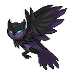
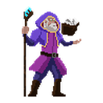

<!DOCTYPE html>
<html lang="pt-BR">
<head>
<meta charset="utf-8">
<meta name="viewport" content="width=device-width, initial-scale=1, viewport-fit=cover">
<title>Missão Pascal – Binômio de Newton</title>
<link href="https://fonts.googleapis.com/css2?family=Cinzel:wght@600;700&family=EB+Garamond:wght@500;600;700&display=swap" rel="stylesheet">
<style>
:root{--bg:#eef2ff;--grid:rgba(74,60,240,.08);--card:#fff;--ink:#1b1f4b;--mut:#565c92;--pri:#4a3cf0;--pribg:#e6e4ff;--ok:#12805a;--okbg:#d6f5e8;--bad:#c4294b;--badbg:#ffe0e7;--gold:#d99a00;--cell:#ffe45c;--cellink:#3a2f00;--hl:#ffb8d6;--hl2:#9be9c7;--bd:#1b1f4b;
box-sizing:border-box;padding-top:env(safe-area-inset-top,0px);padding-bottom:env(safe-area-inset-bottom,0px)}
@media (prefers-color-scheme:dark){:root:not([data-theme="light"]){--bg:#10143a;--grid:rgba(255,255,255,.05);--card:#1a2050;--ink:#eef0ff;--mut:#a4abe0;--pri:#6f5fff;--pribg:#2a2f70;--ok:#4fd9a0;--okbg:#123b34;--bad:#ff7b97;--badbg:#45203a;--gold:#ffd34d;--bd:#5a62b8;color-scheme:dark}}
:root[data-theme="dark"]{--bg:#10143a;--grid:rgba(255,255,255,.05);--card:#1a2050;--ink:#eef0ff;--mut:#a4abe0;--pri:#6f5fff;--pribg:#2a2f70;--ok:#4fd9a0;--okbg:#123b34;--bad:#ff7b97;--badbg:#45203a;--gold:#ffd34d;--bd:#5a62b8;color-scheme:dark}
*{box-sizing:border-box}
body{margin:0;background-color:var(--bg);background-image:linear-gradient(var(--grid) 1px,transparent 1px),linear-gradient(90deg,var(--grid) 1px,transparent 1px);background-size:24px 24px;color:var(--ink);font:16px/1.5 system-ui,-apple-system,"Segoe UI",Roboto,sans-serif}
h1,h2,.fm,.opt,.go,.mc b,.pc,.pill,.stat b{font-family:"Baloo 2","Trebuchet MS",system-ui,sans-serif}
.wrap{max-width:720px;margin:0 auto;padding:16px 16px 40px}
button{font:inherit;color:inherit;cursor:pointer}
button:focus-visible{outline:3px solid var(--pri);outline-offset:2px}
.hero{text-align:center;padding:8px 0}
h1{margin:.2em 0 0;font-size:2.6rem;line-height:1.05}
.hero p{color:var(--mut);max-width:36ch;margin:.5em auto}
.pill{display:inline-block;background:var(--cell);color:var(--cellink);font-weight:600;padding:2px 14px;border-radius:99px;border:2px solid var(--bd)}
.grid{display:grid;gap:12px;margin:18px 0}
.mc{display:flex;gap:14px;align-items:center;text-align:left;padding:14px;background:var(--card);border:2px solid var(--bd);border-radius:18px;box-shadow:0 4px 0 var(--bd)}
.mc:active:not(:disabled){transform:translateY(3px);box-shadow:0 1px 0 var(--bd)}
.mc .ic{font-size:1.9rem;width:52px;height:52px;display:grid;place-items:center;background:var(--pribg);border-radius:14px;flex:none}
.mc b{display:block;font-size:1.2rem;line-height:1.2}
.mc small{display:block;color:var(--mut);line-height:1.3}
.mc em{display:block;font-style:normal;color:var(--gold);font-size:.95rem;margin-top:2px}
.mc.lock{opacity:.6;cursor:not-allowed}
.foot{color:var(--mut);font-size:.9rem;text-align:center}
.card{background:var(--card);border:2px solid var(--bd);border-radius:20px;box-shadow:0 5px 0 var(--bd);padding:18px;margin-top:12px}
.tag{font-size:.88rem;color:var(--mut);font-weight:600;display:flex;justify-content:space-between;gap:8px}
h2{font-size:1.35rem;line-height:1.3;margin:.3em 0 .6em}
.sm{font-size:.85rem;color:var(--mut);font-weight:400}
.top{display:flex;align-items:center;justify-content:space-between;gap:8px;font-weight:700}
.ghost{background:none;border:2px solid var(--bd);border-radius:12px;padding:4px 12px;font-weight:600}
.bar{height:10px;border-radius:9px;background:var(--card);border:2px solid var(--bd);margin:10px 0;overflow:hidden}
.bar i{display:block;height:100%;background:var(--pri);transition:width .4s}
.vis{overflow-x:auto;margin:6px 0 14px;padding:6px 0}
.fm{background:var(--pribg);border-radius:14px;padding:10px 12px;text-align:center;font-size:1.2rem;margin:10px 0;overflow-x:auto}
.big{font-family:"Baloo 2",system-ui,sans-serif;font-weight:600;font-size:1.25em}
.tri{padding-left:18px;width:fit-content;margin:0 auto}
.pr{display:flex;justify-content:center;gap:3px;margin:3px 0;position:relative}
.pr em{position:absolute;left:-18px;top:50%;transform:translateY(-50%);font-size:.7rem;font-style:normal;color:var(--mut)}
.pc{min-width:34px;height:32px;padding:0 4px;display:grid;place-items:center;background:var(--cell);color:var(--cellink);border-radius:8px;font-weight:600;font-size:.92rem}
.pc.q{background:var(--pri);color:#fff;animation:pu .8s infinite alternate}
.pc.hl{background:var(--hl)}.pc.hl2{background:var(--hl2)}
@keyframes pu{to{transform:scale(1.14)}}
.bn{display:inline-flex;flex-direction:column;align-items:center;line-height:1.05;font-size:.8em;margin:0 .25em;padding:0 .4em;border-left:2px solid currentColor;border-right:2px solid currentColor;border-radius:10px;vertical-align:middle}
.bn i{font-style:normal}
.opts{display:grid;grid-template-columns:repeat(auto-fit,minmax(210px,1fr));gap:10px}
.opt{display:flex;gap:10px;align-items:center;width:100%;text-align:left;padding:10px 12px;border:2px solid var(--bd);border-radius:14px;background:var(--card);font-weight:600;font-size:1.1rem;box-shadow:0 3px 0 var(--bd)}
.opt:active:not(:disabled){transform:translateY(2px);box-shadow:0 1px 0 var(--bd)}
.opt b{display:grid;place-items:center;width:28px;height:28px;border-radius:50%;background:var(--pri);color:#fff;font-size:.9rem;flex:none}
.opt span{flex:1;min-width:0;overflow-wrap:anywhere}
.opt:disabled{cursor:default}
.opt:disabled:not(.ok):not(.no){opacity:.5}
.opt.ok{background:var(--okbg);border-color:var(--ok)}
.opt.no{background:var(--badbg);border-color:var(--bad)}
.fb{margin-top:14px;padding:12px 14px;border-radius:14px;border:2px solid}
.fb.ok{background:var(--okbg);border-color:var(--ok)}
.fb.no{background:var(--badbg);border-color:var(--bad);animation:sh .35s}
.fb p{margin:.3em 0 0}
@keyframes sh{25%{transform:translateX(-6px)}75%{transform:translateX(6px)}}
.hint{margin-top:12px;padding:10px 12px;border-radius:12px;background:var(--pribg)}
#hb{margin-top:12px}
.go{display:block;width:100%;margin-top:14px;padding:10px;border:2px solid var(--bd);border-radius:14px;background:var(--pri);color:#fff;font-weight:700;font-size:1.15rem;box-shadow:0 4px 0 var(--bd)}
.go:active{transform:translateY(3px);box-shadow:0 1px 0 var(--bd)}
.go.alt{background:var(--card);color:var(--ink)}
.lesson ul{padding-left:20px;margin:.6em 0}
.lesson li{margin:.35em 0}
.end{text-align:center}
.end .em{font-size:3rem}
.stars{font-size:2.6rem;letter-spacing:.1em;color:var(--gold);line-height:1.1}
.stat{display:flex;justify-content:center;gap:12px;flex-wrap:wrap;margin-top:10px}
.stat div{background:var(--pribg);border-radius:14px;padding:6px 18px;color:var(--mut);font-size:.85rem}
.stat b{display:block;font-size:1.6rem;color:var(--ink);line-height:1.2}
.mas{font-size:3rem;line-height:1;text-align:center}
.mas.sm{font-size:1.7rem;float:left;margin:0 10px 0 0}
.bubble{background:var(--pribg);border:2px solid var(--bd);border-radius:16px;padding:10px 14px;margin:8px 0;overflow:hidden}
.bubble p{margin:.3em 0}
.story .bubble{font-size:1.1rem}
.dots{display:flex;gap:4px;margin:8px 0}
.dots i{flex:1;height:6px;border-radius:4px;background:var(--pribg)}
.dots i.on{background:var(--pri)}
.exw .pc{cursor:pointer}
.map{--t:min(44px,calc((100vw - 52px)/11));position:relative;display:grid;grid-template:repeat(8,var(--t))/repeat(11,var(--t));width:max-content;margin:12px auto;border:2px solid var(--bd);border-radius:16px;box-shadow:0 4px 0 var(--bd);overflow:hidden;font-size:calc(var(--t)*.7);background:repeating-conic-gradient(var(--pribg) 0 25%,var(--card) 0 50%) 0 0/calc(var(--t)*2) calc(var(--t)*2)}
.tl{display:grid;place-items:center;width:var(--t);height:var(--t)}
.tl.on{animation:pu .8s infinite alternate}
.tl.dn{filter:drop-shadow(0 0 5px var(--ok))}
.pl{position:absolute;left:0;top:0;width:var(--t);height:var(--t);display:grid;place-items:center;transition:transform .15s;z-index:2}
.sprite{background-repeat:no-repeat;background-position:0 50%;background-size:auto 100%;image-rendering:auto;color:transparent;font-size:0}
.sprite.player{background-image:url('sprites/player-idle.png');background-size:600% 100%;animation:spriteIdle .72s steps(6) infinite}
.sprite.player.run{background-image:url('sprites/player-run.png');background-size:800% 100%;animation:spriteRun .52s steps(8) infinite}
.sprite.pasca{background-image:url('sprites/pasca-idle.png');background-size:600% 100%;animation:spritePasca .78s steps(6) infinite}
@keyframes spriteIdle{from{background-position:0 50%}to{background-position:100% 50%}}
@keyframes spriteRun{from{background-position:0 50%}to{background-position:100% 50%}}
@keyframes spritePasca{from{background-position:0 50%}to{background-position:100% 50%}}
.tl.pasca{font-size:0;background-image:url('sprites/pasca-idle.png');background-repeat:no-repeat;background-size:600% 100%;background-position:0 50%;animation:spritePasca .78s steps(6) infinite;color:transparent}
.sprite-img{display:block;width:100%;height:100%;object-fit:contain;image-rendering:auto}
.pl.sprite-img{left:calc(var(--t)*.06);top:calc(var(--t)*.06);width:calc(var(--t)*.88);height:calc(var(--t)*.88)}
.tl.pasca.sprite-img{background:none;animation:none}
.pad{display:grid;grid-template-columns:repeat(3,56px);gap:6px;justify-content:center;margin:12px 0}
.pad button{height:48px;border:2px solid var(--bd);border-radius:12px;background:var(--card);font-size:1.3rem;box-shadow:0 3px 0 var(--bd)}
.pad button:active{transform:translateY(2px);box-shadow:0 1px 0 var(--bd)}
.pad button:nth-child(1){grid-area:1/2}.pad button:nth-child(2){grid-area:2/1}.pad button:nth-child(3){grid-area:2/2}.pad button:nth-child(4){grid-area:2/3}
.dbtn{margin:12px 0 0 6px;padding:4px 12px;border:2px solid var(--bd);border-radius:12px;font-weight:700;background:linear-gradient(135deg,#6a1fd0,#c33bff);color:#fff}
.dbtn:disabled{opacity:.5;background:var(--pribg);color:var(--mut);cursor:not-allowed}
.opt.gone:disabled:not(.ok):not(.no){opacity:.15;text-decoration:line-through}
.cin{position:fixed;inset:0;z-index:50;display:grid;place-items:center;text-align:center;padding:20px;color:#fff;cursor:pointer;background:radial-gradient(circle,#6a1fd0,#05020f 75%);animation:cz .5s}
.cin.rd{background:radial-gradient(circle,#b0102f,#05020f 75%)}
.cin h1{font-size:clamp(2rem,9vw,3.4rem);text-shadow:0 0 18px #c88bff;margin:.2em 0}
.cin small{font-size:1.1rem}
@keyframes cz{from{transform:scale(1.3);opacity:0}}
body.dom{background-color:#0a0618;background-image:radial-gradient(circle at 50% 20%,#5b1fa8,#0a0618 70%)}
body.dom .card{box-shadow:0 0 26px #b46cff}
body.dom .top{color:#fff}
body.dom .ghost{color:#fff;border-color:#c9a6ff}
/* ---- Tema grimório medieval ---- */
:root:root:root{--bg:#15101d;--grid:transparent;--card:#e8dbb8;--ink:#2a1b10;--mut:#6b5336;--pri:#7a1626;--pribg:#d8c69b;--ok:#2f6b3a;--okbg:#cfdcae;--bad:#9c2a1a;--badbg:#e8c3a6;--gold:#8f6510;--cell:#3a2d52;--cellink:#f3d98b;--hl:#8a5a1e;--hl2:#2f6b3a;--bd:#5c4220;color-scheme:dark}
html{background:#0d0914}
body{background-color:#0d0914;background-image:radial-gradient(1px 1px at 18px 24px,#f3d98b99,transparent),radial-gradient(1px 1px at 90px 70px,#fff8,transparent),radial-gradient(1.5px 1.5px at 140px 130px,#f3d98b77,transparent),radial-gradient(ellipse at 50% -10%,#33264d,transparent 65%);background-size:170px 170px,170px 170px,170px 170px,100% 100%;background-attachment:fixed;color:#e8dcc0;font:500 1.15rem/1.5 'EB Garamond',Georgia,serif;font-variant-numeric:lining-nums}
body.dom{background-size:100% 100%}
h2,.fm,.opt,.big{font-family:'EB Garamond',Georgia,serif}
.pc,.go,.stat b,.tb,.pad button,.cin h1,.ghost{font-family:Cinzel,Georgia,serif}
h2{font-size:1.5rem;font-weight:700;line-height:1.25}
.tag{font-style:italic;font-weight:500;font-size:1rem}
.card,.mc,.map{border:1px solid #8a6a2f;border-radius:3px;box-shadow:inset 0 0 0 4px var(--card),inset 0 0 0 5px #8a6a2f,0 8px 22px #000a}
.card{background:radial-gradient(ellipse at 15% 0,#f4ead0,transparent 60%),radial-gradient(ellipse at 100% 100%,#cdb887,transparent 55%),var(--card);color:var(--ink);padding:24px}
body.dom .card{box-shadow:inset 0 0 0 4px var(--card),inset 0 0 0 5px #8a6a2f,0 0 28px #b46cff}
.bubble,.fm,.hint,.fb,.stat div,.pad button{color:var(--ink)}
.bubble{border:1px solid #8a6a2f;border-left:4px solid #7a1626;border-radius:2px}
.fm{font-size:1.3rem;font-weight:600;border:1px solid #b9a373;border-radius:2px}
.hint,.fb{border-radius:2px}
.fb{border-width:1px;border-left-width:4px}
.opt{background:#efe4c4;border:1px solid #8a6a2f;border-radius:3px;box-shadow:0 2px 0 #8a6a2f;font-weight:600;font-size:1.2rem;color:var(--ink)}
.opt:active:not(:disabled){box-shadow:none}
.opt.ok{background:var(--okbg);border-color:var(--ok);box-shadow:0 2px 0 var(--ok)}
.opt.no{background:var(--badbg);border-color:var(--bad);box-shadow:0 2px 0 var(--bad)}
.opt b{background:var(--pri);color:#f6e7c1;border:1px solid #c9a24b;font-family:Cinzel,Georgia,serif}
.go{background:linear-gradient(#8f1d2c,#5a0e1a);color:#f6e7c1;border:1px solid #d6aa4b;border-radius:3px;box-shadow:0 3px 0 #2c0810;font-size:1rem}
.go.alt{background:#efe4c4;color:var(--ink);border-color:#8a6a2f;box-shadow:0 3px 0 #8a6a2f}
.ghost{border:1px solid #b8892b;border-radius:3px;color:#e8dcc0;font-size:.85rem}
.card .ghost{color:var(--ink);border-color:#8a6a2f}
body.dom .ghost{color:#fff;border-color:#c9a6ff}
.top{padding:6px 10px;border:1px solid #b8892b;border-radius:3px;background:#1d1627;color:#e8dcc0}
.bar{border:1px solid #b8892b;border-radius:2px;background:#0d0914;height:8px}
.bar i{background:linear-gradient(90deg,#7a1626,#d6aa4b)}
.map{background:repeating-conic-gradient(#2c2538 0 25%,#241e2e 0 50%) 0 0/calc(var(--t)*2) calc(var(--t)*2)}
.tl.on{filter:drop-shadow(0 0 6px #b98cff)}
.tl.dn{filter:drop-shadow(0 0 6px #e6c15a)}
.pc{border:1px solid #b8892b;border-radius:3px;font-size:.85rem;box-shadow:inset 0 0 6px #0008}
.pc.q{background:#c9a24b;color:#2a1b10}
.pc.hl,.pc.hl2{color:#fff3cf}
.pad button{background:#2a2433;color:#e8c872;border:1px solid #b8892b;border-radius:3px;box-shadow:0 3px 0 #0008}
.tq{display:grid;grid-template-columns:repeat(auto-fit,minmax(88px,1fr));gap:6px;margin-top:14px}
.tb{display:flex;flex-direction:column;align-items:center;padding:6px 4px;border:1px solid #b8892b;border-radius:3px;background:#2a2433;color:#f3d98b;font-size:.75rem;font-weight:600;line-height:1.2;cursor:pointer;box-shadow:0 2px 0 #0008}
.tb b{font-size:1.3rem}
.tb i{font-style:normal;font-size:.7rem}
.tb:disabled{opacity:.35;cursor:not-allowed}
.tb:last-child{background:linear-gradient(135deg,#4b1590,#8c2bd6)}
/* ---- Centralização, escala e resolução ---- */
.wrap{--tt:max(26px,min(68px,calc((100vw - 32px)/11),calc((100vh - 340px)/8)));max-width:880px;min-height:calc(100vh - env(safe-area-inset-top,0px) - env(safe-area-inset-bottom,0px));display:flex;flex-direction:column;justify-content:center;align-items:center;padding:12px 12px 24px}
.card,.top,.bar,.bubble{width:100%;max-width:780px}
.map{--t:var(--tt)}
.top:has(+ .map),.map~.bubble{max-width:calc(var(--tt)*11 + 6px)}
.pl{transition:transform .16s linear}
.pad button{touch-action:none;user-select:none;-webkit-user-select:none}
@media (min-width:600px){body{font-size:1.3rem}h2{font-size:1.75rem}.opt{font-size:1.3rem}.card{padding:30px}.pc{min-width:50px;height:46px;font-size:1.15rem}.pr{gap:5px}.tri{padding-left:28px}.pr em{left:-28px;font-size:.85rem}.fm{font-size:1.45rem}.go{font-size:1.15rem}.pad{grid-template-columns:repeat(3,72px)}.pad button{height:60px;font-size:1.6rem}.tb{font-size:.85rem}}
.wrap{padding-top:56px}
.aud{position:fixed;top:calc(env(safe-area-inset-top,0px) + 8px);right:8px;z-index:60;display:flex;gap:6px}
.aud button{width:38px;height:38px;border:1px solid #b8892b;border-radius:3px;background:#1d1627;font-size:1.1rem;cursor:pointer;box-shadow:0 2px 0 #0008}
.tq{grid-template-columns:repeat(auto-fit,minmax(96px,1fr))}
.tdet{margin-top:10px}
.tdet summary{cursor:pointer;font-style:italic}
.tdet p{margin:.4em 0;font-size:.95em}
.cert{width:100%;max-width:720px;text-align:center;color:var(--ink);padding:36px 26px;background:radial-gradient(ellipse at 20% 0,#f6edd3,transparent 60%),radial-gradient(ellipse at 100% 100%,#d2bf8c,transparent 55%),#ecdfba;box-shadow:inset 0 0 0 8px #ecdfba,inset 0 0 0 10px #b8892b,inset 0 0 0 14px #ecdfba,inset 0 0 0 15px #7a1626,0 10px 28px #000b;border-radius:3px}
.cert h1{font-family:Cinzel,Georgia,serif;font-size:1.7rem;line-height:1.2;margin:.3em 0}
.cert small{font-style:italic;font-size:1rem}
.cert .cn{display:inline-block;font:italic 700 2.3rem/1.2 'EB Garamond',Georgia,serif;border-bottom:1px solid #8a6a2f;padding:0 16px;margin:6px 0 10px;max-width:100%;overflow-wrap:anywhere}
.cert p{margin:.4em 0}
.cseals{font-size:2rem;letter-spacing:.3em;margin:8px 0}
.cg{display:grid;grid-template-columns:repeat(auto-fit,minmax(105px,1fr));gap:8px;margin:12px 0}
.cg div{background:#d8c69b;border:1px solid #b9a373;border-radius:2px;padding:4px 6px;font-size:.9rem;line-height:1.3}
.cd{font-size:.95rem;color:var(--mut);margin-top:10px}
.cd b{font-family:Cinzel,Georgia,serif;color:#7a1626}
.card input{width:100%;padding:10px 12px;margin-top:10px;font:600 1.2rem 'EB Garamond',Georgia,serif;border:1px solid #8a6a2f;border-radius:3px;background:#f5ecd2;color:var(--ink)}
@media (prefers-reduced-motion:reduce){*{animation:none!important;transition:none!important}}
</style>
</head>
<body>
<div class="wrap" id="app"></div>
<script>
const $=s=>document.querySelector(s),app=$('#app');
const rnd=(a,b)=>Math.floor(Math.random()*(b-a+1))+a,pick=a=>a[rnd(0,a.length-1)];
const shuffle=a=>{a=[...a];for(let i=a.length-1;i>0;i--){const j=rnd(0,i);[a[i],a[j]]=[a[j],a[i]]}return a};
const C=(n,k)=>{let r=1;for(let i=1;i<=k;i++)r=r*(n-k+i)/i;return Math.round(r)};
const fact=n=>n<2?1:n*fact(n-1);
const row=n=>Array.from({length:n+1},(_,k)=>C(n,k));
const sup=(b,e)=>e===0?'':e===1?b:`${b}<sup>${e}</sup>`;
const bn=(n,k)=>`<span class="bn"><i>${n}</i><i>${k}</i></span>`;
const tri=(N,hide,hl=[])=>`<div class="tri">${Array.from({length:N+1},(_,r)=>`<div class="pr"><em>${r}</em>${row(r).map((v,c)=>{const h=hl.find(x=>x[0]===r&&x[1]===c),q=hide&&hide[0]===r&&hide[1]===c;return `<span data-r="${r}" data-c="${c}" class="pc${q?' q':''}${h?' '+h[2]:''}">${q?'?':v}</span>`}).join('')}</div>`).join('')}</div>`;
const ex=(n,a,b,co,sg)=>co.map((c,i)=>{if(c===0)return'';const v=sup(a,n-i)+(b?sup(b,i):''),t=v?(c===1?'':c)+v:c;return(i?(sg[i]<0?' − ':' + '):'')+t}).join('');
const mk=(ans,exs,bad=[])=>{const s=[ans];exs.forEach(x=>{if(s.length<4&&!s.includes(x)&&!bad.includes(x)&&(typeof x!=='number'||x>0))s.push(x)});
for(let d=1;typeof ans==='number'&&s.length<4;d++)[ans+d,ans-d].forEach(x=>{if(s.length<4&&x>0&&!s.includes(x)&&!bad.includes(x))s.push(x)});
const o=shuffle(s);return{o:o.map(String),a:o.indexOf(ans)}};

/* ---------- Geradores de perguntas ---------- */
const pas1=()=>{const N=rnd(4,6),r=rnd(2,N),c=rnd(1,r-1),v=C(r,c),l=C(r-1,c-1),d=C(r-1,c);
return{p:'Qual número está escondido no triângulo de Pascal?',v:tri(N,[r,c]),...mk(v,[l,d,v+1,v-1]),e:`Cada número é a soma dos dois que estão logo acima dele: ${l} + ${d} = <b>${v}</b>.`,h:'Olhe para os dois números imediatamente acima do ?'}};
const pas2=()=>{const n=rnd(3,7);
return{p:`Qual é a <b>soma</b> de todos os números da linha ${n}?`,v:`<div class="tri"><div class="pr">${row(n).map(x=>`<span class="pc">${x}</span>`).join('')}</div></div>`,...mk(2**n,[2*n,n*n,2**n-1,2**(n+1)]),e:`A soma da linha n é sempre 2<sup>n</sup>. Aqui: ${row(n).join(' + ')} = 2<sup>${n}</sup> = <b>${2**n}</b>.`,h:'Teste nas linhas pequenas: 1, 1+1, 1+2+1… o que acontece com a soma?'}};
const pas3=()=>{const n=rnd(4,6),f=m=>row(m).join(' · '),bad=row(n).map((c,i)=>i===1||i===n-1?c+1:c).join(' · ');
return{p:`Qual destas é a <b>linha ${n}</b> do triângulo de Pascal? <span class="sm">(a primeira linha é a linha 0)</span>`,v:'',...mk(f(n),[f(n-1),f(n+1),bad]),e:`A linha ${n} começa e termina com 1, tem ${n+1} números e é simétrica: ${f(n)}.`,h:'A linha n tem n + 1 números, é simétrica e soma 2<sup>n</sup>.'}};
const c1=()=>{const n=rnd(5,9),k=rnd(2,n-2),m=Math.min(k,n-k),v=C(n,k),nu=Array.from({length:m},(_,i)=>n-i);
return{p:`Quanto vale ${bn(n,k)}? <span class="sm">(lê-se “${n} escolhe ${k}”)</span>`,v:'',...mk(v,[C(n,k-1),C(n,k+1),n*k,v+n]),e:`${bn(n,k)} = ${n}! / (${k}! · ${n-k}!). Cortando o maior fatorial: ${nu.join(' · ')} / ${fact(m)} = <b>${v}</b>.`,h:'Use n! / (k! · (n − k)!) e simplifique os fatoriais.'}};
const c2=()=>{const n=rnd(7,12);let k;do{k=rnd(2,n-2)}while(2*k===n);
return{p:`Complete usando a simetria: ${bn(n,k)} = ${bn(n,'□')}, com □ diferente de ${k}.`,v:'',...mk(n-k,[k+1,n-k+1,n-k-1,n+k],[k]),e:`Simetria: ${bn('n','k')} = ${bn('n','n − k')}. Então □ = ${n} − ${k} = <b>${n-k}</b>. Na linha ${n} do triângulo, os números se repetem de trás para frente.`,h:'Na mesma linha do triângulo, o número da posição k é igual ao da posição n − k.'}};
const c3=()=>{const n=rnd(4,7),k=rnd(1,n-1),a=C(n,k),b=C(n,k+1);
return{p:`Sabendo que ${bn(n,k)} = ${a} e ${bn(n,k+1)} = ${b}, quanto vale ${bn(n+1,k+1)}?`,v:'',...mk(a+b,[a,b,a+b+1,a+b-1]),e:`Relação de Stifel: ${bn('n','k')} + ${bn('n','k+1')} = ${bn('n+1','k+1')}. Aqui: ${a} + ${b} = <b>${a+b}</b>. É a regra do triângulo: somar os dois de cima.`,h:'No triângulo de Pascal, quem fica logo abaixo desses dois números?'}};
const c4=()=>{const n=rnd(8,25),[t,v,why]=pick([[0,1,'Só há 1 jeito de escolher nenhum elemento: não escolher nada.'],[1,n,`Escolher 1 entre ${n} dá ${n} possibilidades.`],[n,1,'Escolher todos os elementos só tem 1 jeito.'],[n-1,n,`Escolher ${n-1} entre ${n} é o mesmo que escolher quem fica de fora: ${n} possibilidades.`]]);
return{p:`Quanto vale ${bn(n,t)}?`,v:'',...mk(v,[1,n,n-1,n+1]),e:`${why} Resultado: <b>${v}</b>.`,h:'Pense em quantas maneiras existem de escolher esses elementos, ou olhe as bordas do triângulo.'}};
const n1=()=>{const n=rnd(2,3),neg=Math.random()<.5,[a,b]=pick([['x','y'],['a','b'],['p','q']]),co=row(n),sg=co.map((_,i)=>neg&&i%2?-1:1),f=(c,s)=>ex(n,a,b,c,s);
return{p:`Qual é o desenvolvimento de <span class="big">(${a} ${neg?'−':'+'} ${b})<sup>${n}</sup></span>?`,v:'',...mk(f(co,sg),[f(co.map(()=>1),sg),f(co.map((c,i)=>i&&i<n?0:c),sg),f(co,sg.map((_,i)=>neg?1:i%2?-1:1)),f(co.map((c,i)=>i&&i<n?c+1:c),sg)]),e:`Os coeficientes vêm da linha ${n} do triângulo: ${co.join(', ')}. ${neg?'Como é uma diferença, os sinais se alternam: + − + −…':'Como é uma soma, todos os sinais são positivos.'}`,h:'Procure a linha n do triângulo de Pascal para os coeficientes.'}};
const n2=()=>{const n=rnd(3,5),a=rnd(2,3),k=rnd(1,n-1),c=C(n,k),v=c*a**(n-k);
return{p:`Qual é o coeficiente de <span class="big">${sup('x',k)}</span> no desenvolvimento de <span class="big">(x + ${a})<sup>${n}</sup></span>?`,v:'',...mk(v,[c,a**(n-k),c*a**k,c*a]),e:`Termo geral: ${bn(n,k)} · ${sup('x',k)} · ${sup(a,n-k)}. O coeficiente é ${c} · ${a**(n-k)} = <b>${v}</b>.`,h:'O termo geral é C(n, k) · x<sup>k</sup> · a<sup>n−k</sup>. Não esqueça a potência do número!'}};
const n3a=()=>{const n=rnd(5,12);return{p:`Quantos termos tem o desenvolvimento de <span class="big">(a + b)<sup>${n}</sup></span>?`,v:'',...mk(n+1,[n,n+2,2*n]),e:`A linha ${n} do triângulo tem ${n+1} números, então são <b>${n+1}</b> termos, de a<sup>${n}</sup> até b<sup>${n}</sup>.`,h:'Conte quantos números tem a linha n do triângulo de Pascal.'}};
const n3b=()=>{const n=rnd(3,6);return{p:`Qual é a soma dos coeficientes de <span class="big">(x + y)<sup>${n}</sup></span>?`,v:'',...mk(2**n,[2*n,n*n,2**n-1,2**(n+1)]),e:`Troque x e y por 1: (1 + 1)<sup>${n}</sup> = 2<sup>${n}</sup> = <b>${2**n}</b>. É a soma da linha ${n} do triângulo.`,h:'Que valores de x e y deixam cada termo igual ao seu coeficiente?'}};
const n3=()=>pick([n3a,n3b])();
const n4=()=>{const n=rnd(4,6),k=rnd(1,n-1),co=row(n),h=co.map((c,i)=>i===k?'?':c),v=co[k];
return{p:'Complete o coeficiente que falta:',v:`<div class="fm">(x + 1)<sup>${n}</sup> = ${ex(n,'x','',h,h.map(()=>1))}</div>`,...mk(v,[co[k-1],co[k+1],v+n,v-1]),e:`Os coeficientes são a linha ${n} do triângulo: ${co.join(', ')}. O que falta é <b>${v}</b>.`,h:'Use a linha n do triângulo de Pascal.'}};

/* ---------- Missões e mini-aulas ---------- */
const M={
pascal:{t:'Triângulo de Pascal',ic:'🔺',d:'Descubra os números escondidos e os segredos do triângulo.',g:[pas1,pas1,pas2,pas3],n:8,
l:`<div class="lesson"><p>O <b>triângulo de Pascal</b> é uma pirâmide de números com regras simples:</p><ul><li>As bordas são sempre <b>1</b>.</li><li>Cada número é a <b>soma dos dois de cima</b>. Nos destaques: 4 + 6 = 10.</li><li>A linha n (começando em 0) tem n + 1 números e soma <b>2<sup>n</sup></b>. Linha 3: 1 + 3 + 3 + 1 = 8 = 2<sup>3</sup>.</li><li>Ele é <b>simétrico</b>: 1 4 6 4 1 lê-se igual de trás para frente.</li></ul>${tri(5,null,[[4,1,'hl'],[4,2,'hl'],[5,2,'hl2']])}</div>`},
coef:{t:'Coeficientes Binomiais',ic:'🧮',d:'Fatoriais, simetria e relação de Stifel.',g:[c1,c1,c2,c3,c4],n:8,
l:`<div class="lesson"><p>O <b>coeficiente binomial</b> ${bn('n','k')} (“n escolhe k”) conta de quantas maneiras dá para escolher k itens entre n. Ele é o número da linha n, posição k, do triângulo de Pascal.</p><div class="fm">${bn('n','k')} = n! / (k! · (n − k)!)</div><ul><li>Exemplo: ${bn(5,2)} = 5! / (2! · 3!) = 120 / 12 = <b>10</b>.</li><li><b>Simetria:</b> ${bn('n','k')} = ${bn('n','n − k')}.</li><li><b>Stifel:</b> ${bn('n','k')} + ${bn('n','k+1')} = ${bn('n+1','k+1')}.</li><li><b>Casos fáceis:</b> ${bn('n',0)} = 1, ${bn('n',1)} = n, ${bn('n','n')} = 1.</li></ul></div>`},
prod:{t:'Produtos Notáveis',ic:'✨',d:'De (a + b)² até (a + b)ⁿ: expanda como mestre.',g:[n1,n1,n2,n3,n4],n:8,
l:`<div class="lesson"><p>Os produtos notáveis são casos do <b>Binômio de Newton</b>:</p><div class="fm">(a + b)<sup>2</sup> = a<sup>2</sup> + 2ab + b<sup>2</sup></div><div class="fm">(a + b)<sup>3</sup> = a<sup>3</sup> + 3a<sup>2</sup>b + 3ab<sup>2</sup> + b<sup>3</sup></div><p>Os coeficientes (1 2 1 e 1 3 3 1) são as linhas do triângulo de Pascal! Em geral:</p><div class="fm">(a + b)<sup>n</sup> = Σ ${bn('n','k')} a<sup>n−k</sup> b<sup>k</sup></div><ul><li>Tem n + 1 termos; os expoentes de a descem e os de b sobem.</li><li>Em (a − b)<sup>n</sup> os sinais se alternam: + − + − …</li><li>Termo geral: T<sub>k+1</sub> = ${bn('n','k')} · a<sup>n−k</sup> · b<sup>k</sup>.</li></ul></div>`},
final:{t:'Desafio Final',ic:'🏆',d:'Tudo misturado: 10 questões e 3 vidas.',g:[pas1,pas2,pas3,c1,c2,c3,c4,n1,n2,n3,n4],n:10}};

let P={},S={};try{P=JSON.parse(localStorage.getItem('pq1')||'{}')||{}}catch(e){}
const save=()=>{try{localStorage.setItem('pq1',JSON.stringify(P))}catch(e){}};
const hearts=()=>'❤️'.repeat(S.lives)+'🖤'.repeat(3-S.lives);

/* ---------- Telas ---------- */
function home(){world()}
function menu(){
const done=['pascal','coef','prod'].every(k=>(P[k]&&P[k].s)>0),tot=Object.values(P).reduce((a,b)=>a+(b.s||0),0);
app.innerHTML=`<header class="hero"><div style="overflow-x:auto">${tri(4,null,[[3,1,'hl'],[3,2,'hl'],[4,2,'hl2']])}</div><h1>Missão Pascal</h1><p>O jogo do <b>Binômio de Newton</b>: coeficientes binomiais, triângulo de Pascal e produtos notáveis.</p><span class="pill">★ ${tot} de 12 estrelas</span></header>
<div class="grid">${Object.entries(M).map(([k,m])=>{const lock=k==='final'&&!done,p=P[k]||{};return `<button class="mc${lock?' lock':''}" ${lock?'disabled':''} onclick="lesson('${k}')"><span class="ic">${lock?'🔒':m.ic}</span><span><b>${m.t}</b><small>${lock?'Conclua as 3 missões para liberar.':m.d}</small><em>${'★'.repeat(p.s||0)}${'☆'.repeat(3-(p.s||0))}${p.b?` Recorde: ${p.b} pontos`:''}</em></span></button>`}).join('')}</div>
<button class="ghost" onclick="story(0)" style="display:block;margin:0 auto 10px">📖 Ver a história e como jogar</button><p class="foot">Cada andar da Torre começa com uma mini-aula passo a passo. Você tem 3 vidas ❤️ e cada erro vem com uma explicação.</p>`}
/* ---------- História e tutorial ---------- */
const SP=[['🦉','Oi! Eu sou o <b>Pasca</b>, guardião da <b>Torre dos Números</b>. Há séculos, o chão de cada andar brilha com o <b>triângulo de Pascal</b>.'],['👾','Mas o <b>Rei Caos</b> invadiu a Torre: números sumiram, os fatoriais viraram sopa e as fórmulas se embaralharam!'],['🧙','Você é o(a) novo(a) aprendiz de matemático(a). Resolva os desafios de cada andar para restaurar a Torre e derrotar o Rei Caos.'],['🎮','<b>Como jogar:</b> escolha a resposta certa (A, B, C ou D). Cada erro custa 1 ❤️ (são 3). O botão 💡 dá uma dica por −3 pontos. Acertos seguidos dão bônus 🔥. Se terminar com vidas, você ganha de 1 a 3 ★.'],['📖','<b>Antes de cada andar</b> eu te dou uma mini-aula passo a passo. Leia com calma: ela é o seu mapa! Vamos subir?']];
SP.splice(0,SP.length,['🦉','Bem-vindo(a) à <b>Academia dos Domínios</b>! Eu sou o Mestre <b>Pasca</b>. Aqui, feiticeiros numéricos usam a <b>Energia ⚡</b> dos números e dominam a arte da <b>Expansão</b>.'],['📜','Reza a lenda que Newton criou a primeira <b>Expansão de Domínio</b> da história: o <b>Binômio</b>. Dentro dela, cada termo cai no lugar certo, guiado pelo triângulo de Pascal.'],['👾','Mas o <b>Rei Caos</b>, uma maldição nascida do medo de errar, invadiu a Academia. Ele selou os portais e soltou 3 maldições menores, cada uma com o seu próprio domínio.'],['🌀','Seu poder: cada acerto carrega 1 ⚡. Com 3 cargas, você usa a <b>sua</b> Expansão de Domínio: 2 respostas erradas somem, a dica sai de graça e os pontos dobram!'],['🎮','<b>Como jogar:</b> ande pela Academia com as setas, WASD ou os botões. Encoste num portal para entrar. Cada erro custa 1 ❤️ (são 3). Quebre os 3 domínios para ganhar os selos e abrir o portal do Rei Caos.'],['📖','Antes de cada portal eu te dou uma mini-aula passo a passo. Leia com calma: o conhecimento é o que enfraquece o Caos. Vamos?']);
SP[3]=['✨','<b>Suas técnicas:</b> cada acerto carrega 1 ⚡ (máximo 3). Gaste a energia em 🔮 <b>Olho de Pascal</b> (1⚡, mostra o triângulo), ✂️ <b>Corte Binomial</b> (1⚡, elimina 1 resposta errada), 🛡️ <b>Barreira</b> (2⚡, bloqueia o próximo erro), 💚 <b>Cura</b> (2⚡, devolve 1 ❤️) ou na 🌀 <b>Expansão de Domínio</b> (3⚡: elimina 2 erradas, dá a dica de graça e dobra os pontos).'];
function story(i){const l=i===SP.length-1;app.innerHTML=`<div class="card story"><div class="tag"><span>Prólogo</span><span>${i+1} de ${SP.length}</span></div><div class="mas">${SP[i][0]}</div><div class="bubble">${SP[i][1]}</div>${i?`<button class="go alt" onclick="story(${i-1})">Voltar</button>`:''}<button class="go" onclick="${l?'P.seen=1;save();home()':`story(${i+1})`}">${l?'Entrar na Torre':'Continuar'}</button></div>`}
const ST={
pascal:{fl:'Andar 1',nm:'A Torre dos Números',intro:'O chão deste andar é um triângulo de Pascal gigante, mas o Rei Caos apagou vários números. Complete o triângulo para acender as luzes!',win:'As luzes do 1º andar acenderam! O triângulo está inteiro de novo. Suba para a Biblioteca.',lose:'O Caos apagou as luzes… Releia a mini-aula e tente de novo, aprendiz!',steps:[
['O que é o triângulo?','É uma pirâmide de números. Cada fileira é uma <b>linha</b>; o topo é a linha 0. Os números pequenos à esquerda mostram qual é a linha.',tri(4)],
['Regra 1: as bordas','Nas pontas de cada linha só existe o número <b>1</b>. Olhe os destaques.',tri(4,null,[[1,0,'hl'],[1,1,'hl'],[2,0,'hl'],[2,2,'hl'],[3,0,'hl'],[3,3,'hl'],[4,0,'hl'],[4,4,'hl']])],
['Regra 2: a soma','Para achar um número do meio, some os <b>dois que estão logo acima</b> dele. Aqui: 3 + 3 = <b>6</b>.',tri(4,null,[[3,1,'hl'],[3,2,'hl'],[4,2,'hl2']])],
['Experimente!','Toque em qualquer número do triângulo e veja de onde ele vem.',`<div class="exw">${tri(5)}</div><p class="hint" id="ext">Toque em um número.</p>`],
['Regra 3: soma da linha','A soma dos números da linha n é sempre <b>2<sup>n</sup></b>. É um atalho muito usado nas questões!',`<div class="fm">linha 1: 1 + 1 = 2 = 2<sup>1</sup><br>linha 2: 1 + 2 + 1 = 4 = 2<sup>2</sup><br>linha 3: 1 + 3 + 3 + 1 = 8 = 2<sup>3</sup></div>`],
['Regra 4: simetria','O triângulo é um espelho: cada linha se lê igual de trás para frente.',`<div class="fm">1 · 5 · 10 · 10 · 5 · 1</div>`]]},
coef:{fl:'Andar 2',nm:'A Biblioteca dos Fatoriais',intro:'Os livros voaram das prateleiras e os fatoriais viraram bagunça. Calcule os coeficientes binomiais para arrumar cada estante!',win:'Estantes arrumadas! Os fatoriais voltaram ao lugar. O laboratório espera no andar de cima.',lose:'Os livros caíram de novo… Revise a mini-aula e arrume a biblioteca outra vez!',steps:[
['Escolher itens',`Com 4 amigos (A, B, C, D), de quantas maneiras dá para escolher 2 para um time? Esse número é ${bn(4,2)}, lido “4 escolhe 2”. Ele aparece na linha 4, posição 2 (contando de 0) do triângulo!`,`<div class="fm">AB · AC · AD · BC · BD · CD = 6</div>${tri(4,null,[[4,2,'hl2']])}`],
['O que é fatorial?','O fatorial de n é o produto de n até 1. Por exemplo, 4! = 4 · 3 · 2 · 1 = 24. Combinado: <b>0! = 1</b>.',`<div class="fm">5! = 5 · 4 · 3 · 2 · 1 = 120</div>`],
['A fórmula',`Para calcular ${bn('n','k')} use a fórmula abaixo. Dica: <b>corte o maior fatorial</b> do denominador com o numerador.`,`<div class="fm">${bn('n','k')} = n! / (k! · (n − k)!)</div><div class="fm">${bn(5,2)} = 5! / (2! · 3!) = (5 · 4 · 3!) / (2 · 3!) = 20 / 2 = <b>10</b></div>`],
['Simetria','Escolher quem entra no time é o mesmo que escolher quem fica de fora. Por isso os dois números de baixo somam n.',`<div class="fm">${bn('n','k')} = ${bn('n','n − k')}<br>${bn(7,2)} = ${bn(7,5)} = 21</div>`],
['Relação de Stifel','Dois vizinhos da mesma linha somam o número que está embaixo deles. É a regra 2 do triângulo, só que com símbolos.',`<div class="fm">${bn('n','k')} + ${bn('n','k+1')} = ${bn('n+1','k+1')}</div>${tri(5,null,[[4,1,'hl'],[4,2,'hl'],[5,2,'hl2']])}<p class="sm">Exemplo: 4 + 6 = 10</p>`],
['Casos fáceis','Escolher nenhum ou todos tem 1 jeito só. Escolher 1 entre n dá n jeitos.',`<div class="fm">${bn('n',0)} = 1 &nbsp; ${bn('n',1)} = n &nbsp; ${bn('n','n')} = 1</div>`]]},
prod:{fl:'Andar 3',nm:'O Laboratório das Expansões',intro:'As poções do laboratório precisam das fórmulas certas: cada (a + b)ⁿ expandido do jeito certo forma uma poção. Use o triângulo como receita!',win:'Poções prontas! O Binômio de Newton está dominado. Só falta enfrentar o Rei Caos.',lose:'As poções explodiram! Releia a receita na mini-aula e tente outra vez.',steps:[
['Você já conhece um','O produto notável mais famoso é o quadrado da soma. Repare: os coeficientes 1, 2, 1 formam a <b>linha 2</b> do triângulo!',`<div class="fm">${'(a + b)<sup>2</sup> = '+ex(2,'a','b',row(2),[1,1,1])}</div>${tri(2,null,[[2,0,'hl2'],[2,1,'hl2'],[2,2,'hl2']])}`],
['E o cubo?','Agora os coeficientes são 1, 3, 3, 1, que é a <b>linha 3</b>. Cada linha do triângulo vira um produto notável.',`<div class="fm">${'(a + b)<sup>3</sup> = '+ex(3,'a','b',row(3),[1,1,1,1])}</div>${tri(3,null,[[3,0,'hl2'],[3,1,'hl2'],[3,2,'hl2'],[3,3,'hl2']])}`],
['O padrão dos expoentes','Em (a + b)<sup>n</sup>, os expoentes de <b>a descem</b> de n até 0 e os de <b>b sobem</b> de 0 até n. A soma dos dois expoentes em cada termo é sempre n. Há n + 1 termos.',`<div class="fm">${'(a + b)<sup>4</sup> = '+ex(4,'a','b',row(4),[1,1,1,1,1])}</div>`],
['Receita em 3 passos','<b>1)</b> Ache a linha n do triângulo: são os coeficientes. <b>2)</b> Escreva a com expoentes descendo e b com expoentes subindo. <b>3)</b> Multiplique cada coeficiente pelo seu par a e b. Exemplo com n = 4:',tri(4,null,[[4,0,'hl2'],[4,1,'hl2'],[4,2,'hl2'],[4,3,'hl2'],[4,4,'hl2']])],
['E se for menos?','Em (a − b)<sup>n</sup>, os coeficientes são os mesmos, mas os sinais <b>alternam</b>: + − + − …',`<div class="fm">${'(a − b)<sup>3</sup> = '+ex(3,'a','b',row(3),[1,-1,1,-1])}</div>`],
['Fórmula geral e atalhos',`O Binômio de Newton junta tudo. O termo de posição k + 1 é ${bn('n','k')} · a<sup>n−k</sup> · b<sup>k</sup>. Atalho: troque as letras por 1 e a soma dos coeficientes é 2<sup>n</sup>.`,`<div class="fm">(a + b)<sup>n</sup> = Σ ${bn('n','k')} a<sup>n−k</sup> b<sup>k</sup></div><div class="fm">Coeficiente de x em (x + 2)<sup>3</sup>: ${bn(3,1)} · 2<sup>2</sup> = 3 · 4 = <b>12</b></div>`]]},
final:{fl:'Topo da Torre',nm:'O Rei Caos',intro:'Chegou a hora do duelo! O Rei Caos mistura todos os desafios da Torre. Cada acerto é um golpe seu; cada erro, um golpe dele. Você tem 3 vidas. Boa sorte!',win:'O Rei Caos foi derrotado e a Torre brilha por inteiro! Você agora é Guardião(ã) do Binômio de Newton. 🏆',lose:'O Rei Caos riu e escapou… mas você aprendeu muito. Treine mais e volte para o duelo!',steps:[]}};
Object.assign(ST.pascal,{cu:'Maldição Apagadora',ed:'Escuridão Numérica',dn:'Triângulo Infinito',intro:'No portal 1, a Maldição Apagadora apagou os números do chão. Aprenda como o triângulo funciona. Quando você entrar, ela vai expandir o domínio dela, e você precisa quebrá-lo acertando as questões!',win:'Domínio quebrado! A Maldição Apagadora sumiu e você ganhou o Selo do Triângulo 🔺. O portal 2 abriu!',lose:'A Maldição prendeu você na Escuridão Numérica… Reveja a aula e volte mais forte!'});
Object.assign(ST.coef,{cu:'Maldição Traça',ed:'Estante Embaralhada',dn:'Biblioteca Fatorial',intro:'A Maldição Traça devora os livros e embaralha os fatoriais. Aprenda as ferramentas de contagem antes de entrar no domínio dela.',win:'Estantes arrumadas! Você ganhou o Selo dos Fatoriais 📚. O portal 3 abriu!',lose:'A Traça embaralhou tudo de novo… Revise a aula e volte!'});
Object.assign(ST.prod,{cu:'Maldição do Frasco',ed:'Poção Instável',dn:'Laboratório Expandido',intro:'A Maldição do Frasco mistura poções erradas. A expansão de (a + b)ⁿ é a receita certa, como a Expansão de Domínio que a lenda atribui a Newton!',win:'Poções estáveis! Selo da Expansão ⚗️ conquistado. O portal do Rei Caos abriu!',lose:'As poções explodiram! Releia a receita na aula e tente outra vez.'});
Object.assign(ST.final,{cu:'Rei Caos',ed:'Caos Absoluto',dn:'Binômio Absoluto',intro:'Os três selos brilham. O Rei Caos, nascido do medo de errar, vai expandir o Caos Absoluto. Carregue ⚡ e use sua Expansão de Domínio na hora certa!',win:'O Rei Caos se desfez em números ordenados. Você é Guardião(ã) do Binômio de Newton! 🏆',lose:'O Rei Caos riu e escapou… mas você aprendeu muito. Treine e volte para o duelo!'});
/* ---------- Mundo explorável e Expansão de Domínio ---------- */
const MAP=['.....K.....','...........','.##.....##.','...........','....N.....4','...........','...........','1....2....3'],W={x:5,y:5,f:1},ord=['pascal','coef','prod','esc'],SEAL={'1':'🔺','2':'📚','3':'⚗️','4':'🪜'},dn=k=>P[k]&&P[k].s>0;
const lock=c=>c==='K'?!ord.every(dn):c==='1'?false:!dn(ord[+c-2]);
const enr=()=>'\u26a1'.repeat(S.en)+'\u25ab\ufe0f'.repeat(3-S.en)+(S.sh?'♾️':'');
const msg=t=>{const m=$('#msg');if(m)m.innerHTML=`<span class="mas sm">🦉</span>${t}`};
let SPR_TIMERS=[],SPR_PLAYER=0,SPR_MODE='';
const clearSpriteTimers=()=>{SPR_TIMERS.forEach(clearInterval);SPR_TIMERS=[];clearInterval(SPR_PLAYER);SPR_PLAYER=0;SPR_MODE=''};
const animateSprite=(el,prefix,count,ms)=>{let i=0;const tick=()=>{if(!el.isConnected)return;el.src=`sprites/${prefix}-${i++%count}.png`};tick();const id=setInterval(tick,ms);SPR_TIMERS.push(id)};
const setPlayerSprite=mode=>{const p=$('#wp');if(!p||SPR_MODE===mode)return;clearInterval(SPR_PLAYER);let i=0;const prefix=mode==='run'?'player-run':'player-idle',count=mode==='run'?8:6;const tick=()=>{if(p.isConnected)p.src=`sprites/${prefix}-${i++%count}.png`};tick();SPR_PLAYER=setInterval(tick,mode==='run'?65:120);SPR_MODE=mode};
const draw=()=>{const p=$('#wp');if(p){p.style.transform=`translate(calc(var(--t)*${W.x}),calc(var(--t)*${W.y})) scaleX(${W.f})`;setPlayerSprite(W.running?'run':'idle')}};
function world(){document.body.classList.remove('dom');let h='';
clearSpriteTimers();MAP.forEach((r,y)=>[...r].forEach((c,x)=>{if(c==='.')return;const sp='1234K'.includes(c),L=sp&&lock(c),e=c==='#'?'🏛️':c==='N'?'':c==='K'?(L?'🔒':'👾'):L?'🔒':SEAL[c];h+=c==='N'?``:`<b class="tl${sp&&!L?' on':''}${SEAL[c]&&dn(ord[+c-1])?' dn':''}" style="grid-area:${y+1}/${x+1}">${e}</b>`}));
const tot=Object.values(P).reduce((a,b)=>a+(b.s||0),0);
app.innerHTML=`<div class="top"><button class="ghost" onclick="story(0)">📖 História</button>${P.end?'<button class="ghost" onclick="epilogue(0)">🏆 Final</button>':''}${P.infinite?'<button class="ghost" onclick="infinite()">♾️ Infinito</button>':''}${ord.every(dn)&&dn('final')?'<button class="ghost" onclick="cert()">📜 Certificado</button>':''}<span>Selos: ${ord.map((k,i)=>dn(k)?SEAL[i+1]:'◻️').join(' ')}</span><span>★ ${tot}</span></div><div class="map" id="map">${h}</div><div class="bubble" id="msg"><span class="mas sm">🦉</span>Use as setas, WASD ou os botões para andar pela Academia. Encoste nos portais numerados. Se precisar de ajuda, fale comigo, o Mestre Pasca!</div><div class="pad"><button aria-label="Cima">↑</button><button aria-label="Esquerda">←</button><button aria-label="Baixo">↓</button><button aria-label="Direita">→</button></div><button class="ghost" onclick="resetGame()">Apagar progresso</button><p class="foot" style="color:#b9a88a;margin:6px 0 0">Seu progresso é salvo automaticamente neste navegador.</p>`;draw();document.querySelectorAll('.pasca.sprite-img').forEach(el=>animateSprite(el,'pasca-idle',6,130))}
function mv(dx,dy){if(!$('#wp'))return;const n=performance.now();if(n-(W.t||0)<150)return;W.t=n;if(dx)W.f=dx>0?1:-1;const x=W.x+dx,y=W.y+dy;if(x<0||y<0||x>10||y>7)return;const c=MAP[y][x];if(c==='#'){sfx('bump');return draw()}if('1234KN'.includes(c)){sfx('portal');return act(c)}W.x=x;W.y=y;W.running=true;P.pos=[x,y];clearTimeout(W.rt);W.rt=setTimeout(()=>{W.running=false;draw()},220);clearTimeout(W.st);W.st=setTimeout(save,500);sfx('step');draw()}
function act(c){const n=ord.filter(dn).length;
if(c==='N')return msg(['Comece pelo portal 1 🔺, no canto inferior esquerdo: lá você aprende o Triângulo de Pascal.','Ótimo! O portal 2 📚 abriu. Dica: cada acerto carrega ⚡. Com 3 cargas você libera sua Expansão de Domínio!','Falta o portal 3 ⚗️. Lá, o triângulo vira receita de poção.','O portal 4 🪜 abriu: a Escadaria dos Degraus guarda técnicas avançadas.','Os 4 selos brilham! O portal do topo 👾 está aberto: o Rei Caos espera.'][n]+(dn('final')?' E você já o derrotou! Tente ★★★ em todos os andares.':''));
if(lock(c))return msg(c==='K'?'🔒 O portal do Rei Caos só abre com os 4 selos.':'🔒 Portal selado. Quebre antes o domínio do andar anterior.');
lesson(c==='K'?'final':ord[+c-1])}
let HT=0;const stopH=()=>{clearInterval(HT);HT=0};
document.addEventListener('pointerdown',e=>{const b=e.target.closest('.pad button');if(!b)return;e.preventDefault();const d=[[0,-1],[-1,0],[0,1],[1,0]][[...b.parentNode.children].indexOf(b)];mv(...d);stopH();HT=setInterval(()=>mv(...d),160)});
['pointerup','pointercancel'].forEach(t=>document.addEventListener(t,stopH));window.addEventListener('blur',stopH);
document.addEventListener('keydown',e=>{const d={ArrowUp:[0,-1],w:[0,-1],ArrowDown:[0,1],s:[0,1],ArrowLeft:[-1,0],a:[-1,0],ArrowRight:[1,0],d:[1,0]}[e.key];if(d&&$('#wp')){e.preventDefault();mv(...d)}});
let PATH_TIMER=0,PATH=[];
const stopPath=()=>{clearInterval(PATH_TIMER);PATH_TIMER=0;PATH=[]};
const pathTo=(tx,ty)=>{const key=(x,y)=>`${x},${y}`,start=key(W.x,W.y),goal=key(tx,ty),q=[[W.x,W.y]],prev={[start]:null};while(q.length){const [x,y]=q.shift();if(key(x,y)===goal)break;for(const [dx,dy] of [[0,-1],[1,0],[0,1],[-1,0]]){const nx=x+dx,ny=y+dy,nk=key(nx,ny);if(nx<0||ny<0||nx>10||ny>7||Object.prototype.hasOwnProperty.call(prev,nk))continue;const cell=MAP[ny][nx],isGoal=nx===tx&&ny===ty;if(cell==='#'||(!isGoal&&'1234KN'.includes(cell)))continue;prev[nk]=[x,y];q.push([nx,ny])}}if(!(goal in prev))return[];const out=[];for(let cur=[tx,ty];cur;cur=prev[key(cur[0],cur[1])])out.unshift(cur);return out.slice(1)};
const followPath=path=>{stopPath();PATH=path;const step=()=>{if(!PATH.length||!$('#wp'))return stopPath();const [x,y]=PATH.shift();mv(Math.sign(x-W.x),Math.sign(y-W.y));if(!PATH.length)stopPath()};step();if(PATH.length)PATH_TIMER=setInterval(step,170)};
document.addEventListener('click',e=>{const map=e.target.closest('#map');if(!map||!$('#wp'))return;const r=map.getBoundingClientRect(),t=parseFloat(getComputedStyle(map).getPropertyValue('--t'))||r.width/11,tx=Math.max(0,Math.min(10,Math.floor((e.clientX-r.left)/t))),ty=Math.max(0,Math.min(7,Math.floor((e.clientY-r.top)/t))),cell=MAP[ty][tx];if(cell==='#')return stopPath();followPath(pathTo(tx,ty))});
const TQ=[['olho','🔮','Olho de Pascal',1],['corte','✂️','Corte Binomial',1],['barr','♾️','Mugen',2],['cura','💚','Reversão de Feitiço',2],['dom','🌀','Expansão de Domínio',3]];
function tech(){const c=$('#tc');if(!c)return;const l=document.querySelectorAll('.opt:not(:disabled)').length;c.innerHTML=`<div class="tq">${TQ.map(([k,e,n,m])=>{const off=S.done||S.en<m||(k==='cura'&&S.lives>=3)||(k==='barr'&&S.sh)||(k==='dom'&&S.dm)||(k==='olho'&&S.eye)||(k==='corte'&&l<=2);return `<button class="tb" ${off?'disabled':''} onclick="cast('${k}')"><b>${e}</b><span>${n}</span><i>${'⚡'.repeat(m)}</i></button>`}).join('')}</div>`;$('#en').textContent=enr()}
function cast(k){if(S.done)return;const q=S.qs[S.i],m=TQ.find(t=>t[0]===k)[3];if(S.en<m)return;if(k==='dom')return dom();S.en-=m;
if(k==='olho'){S.eye=1;$('#eye').innerHTML=`<div class="hint">🔮 <b>Olho de Pascal:</b> consulte o triângulo.<div class="vis">${tri(6)}</div></div>`}
if(k==='corte'){const bs=[...document.querySelectorAll('.opt')],w=shuffle(bs.map((b,x)=>x).filter(x=>x!==q.a&&!bs[x].disabled))[0];if(w!==undefined){bs[w].disabled=true;bs[w].classList.add('gone')}}
if(k==='barr')S.sh=true;
if(k==='cura'){S.lives=Math.min(3,S.lives+1);$('#hr').textContent=hearts()}
tech()}
function cin(a,b,c,cb){sfx(c==='pu'?'dom':'portal');const o=document.createElement('div');o.className='cin '+c;o.innerHTML=`<div><small>${a}</small><h1>${b}</h1></div>`;document.body.appendChild(o);let d=0;const f=()=>{if(d)return;d=1;o.remove();cb&&cb()};o.onclick=f;setTimeout(f,2200)}
function dom(){if(S.done||S.dm||S.en<3)return;S.dm=true;S.en=0;const q=S.qs[S.i];
cin('Você expandiu o seu domínio',ST[S.id].dn,'pu',()=>{document.body.classList.add('dom');
const bs=[...document.querySelectorAll('.opt')];shuffle(bs.map((b,x)=>x).filter(x=>x!==q.a&&!bs[x].disabled)).slice(0,2).forEach(x=>{bs[x].disabled=true;bs[x].classList.add('gone')});
tech();$('#en').textContent=enr();$('#hb').hidden=true;S.hinted=true;$('#hn').innerHTML=`<div class="hint">🌀 O domínio revela: ${q.h}</div>`})}
/* ---------- Áudio: efeitos sonoros e trilha ---------- */
let AC,MG,MT,SOFF=false,MOFF=false,MI=0,MTMR=0,AU;
const MUSIC_SRC='';/* para usar sua própria música, cole aqui um data URI (data:audio/mpeg;base64,...) */
const au=()=>{if(!AC){try{AC=new(window.AudioContext||window.webkitAudioContext)();MG=AC.createGain();MG.gain.value=.8;MG.connect(AC.destination)}catch(e){}}if(AC&&AC.state==='suspended')AC.resume();return AC};
const tone=(f,t=0,d=.15,ty='sine',v=.2,f2)=>{const a=au();if(!a||SOFF)return;const o=a.createOscillator(),g=a.createGain(),s=a.currentTime+t;o.type=ty;o.frequency.setValueAtTime(f,s);if(f2)o.frequency.exponentialRampToValueAtTime(f2,s+d);g.gain.setValueAtTime(v,s);g.gain.exponentialRampToValueAtTime(.001,s+d);o.connect(g);g.connect(MG);o.start(s);o.stop(s+d+.02)};
const SFX={step:()=>tone(170,0,.06,'triangle',.07),bump:()=>tone(90,0,.08,'square',.08),click:()=>tone(520,0,.05,'square',.05),portal:()=>tone(200,0,.5,'sine',.18,900),cast:()=>{tone(400,0,.3,'sine',.18,1200);tone(800,.05,.3,'triangle',.1,1600)},ok:()=>[523,659,784].forEach((f,i)=>tone(f,i*.09,i>1?.3:.14,'triangle',.2)),no:()=>tone(220,0,.3,'sawtooth',.14,100),dom:()=>{tone(60,0,1.4,'sawtooth',.25,30);tone(120,0,1.6,'square',.08,40);[0,.15,.3,.45,.6].forEach((t,i)=>tone(300+i*150,t,.5,'sine',.12))},win:()=>[523,659,784,1046].forEach((f,i)=>tone(f,i*.14,.45,'triangle',.22)),lose:()=>[392,330,262,196].forEach((f,i)=>tone(f,i*.2,.4,'sawtooth',.12))};
const sfx=k=>{try{SFX[k]()}catch(e){}};
const MN=[293.66,349.23,440,523.25,440,349.23,392,466.16,587.33,466.16,392,311.13];
function mtone(f,d,ty,v){const a=au();if(!a||MOFF)return;const o=a.createOscillator(),g=a.createGain(),s=a.currentTime;o.type=ty;o.frequency.value=f;g.gain.setValueAtTime(0,s);g.gain.linearRampToValueAtTime(v,s+.05);g.gain.exponentialRampToValueAtTime(.001,s+d);o.connect(g);g.connect(MT);o.start(s);o.stop(s+d+.05)}
function music(){if(MTMR||MOFF||AU)return;const a=au();if(!a)return;
if(MUSIC_SRC){AU=new Audio(MUSIC_SRC);AU.loop=true;AU.volume=.4;AU.play().catch(()=>{});return}
MT=a.createGain();MT.gain.value=.6;MT.connect(MG);
MTMR=setInterval(()=>{const i=MI++;mtone(MN[i%12],1,'triangle',.07);if(i%12===0){mtone(73.42,5,'sine',.12);mtone(110,5,'sine',.06)}if(i%12===6){mtone(98,5,'sine',.1);mtone(146.83,5,'sine',.05)}if(i%4===2)mtone(MN[(i+5)%12]*2,.6,'sine',.03)},480)}
const aud=document.createElement('div');aud.className='aud';aud.innerHTML='<button id="bm" aria-label="Música">🎵</button><button id="bs" aria-label="Efeitos sonoros">🔊</button>';document.body.appendChild(aud);
$('#bm').onclick=()=>{MOFF=!MOFF;$('#bm').textContent=MOFF?'🔇':'🎵';if(AU)MOFF?AU.pause():AU.play();else if(!MOFF)music()};
$('#bs').onclick=()=>{SOFF=!SOFF;$('#bs').textContent=SOFF?'🔕':'🔊'};
document.addEventListener('pointerdown',e=>{au();music();if(e.target.closest('button')&&!e.target.closest('.pad'))sfx('click')});
document.addEventListener('keydown',()=>{au();music()});
/* ---------- Técnicas: descrições e efeitos ---------- */
const TD={olho:'Mostra o triângulo de Pascal para você consultar durante a questão.',corte:'Elimina 1 resposta errada, deixando a escolha mais fácil.',barr:'Mugen, o Infinito: o golpe se aproxima cada vez mais, mas nunca chega, como um limite que não alcança o valor. Seu próximo erro NÃO tira vida (a proteção some depois de bloquear um erro).',cura:'Reversão de Feitiço: reverte o dano sofrido e devolve 1 ❤️ (até o máximo de 3).',dom:'Expansão de Domínio: acerto garantido! A resposta certa é escolhida por você na hora e vale pontos em dobro.'};
SP[3]=['✨','<b>Suas técnicas:</b> cada acerto carrega 1 ⚡ (máx. 3). 🔮 <b>Olho de Pascal</b> (1⚡) mostra o triângulo. ✂️ <b>Corte Binomial</b> (1⚡) elimina 1 resposta errada. ♾️ <b>Mugen</b> (2⚡) cria o Infinito: o golpe nunca chega e seu próximo erro não tira vida. 💚 <b>Reversão de Feitiço</b> (2⚡) devolve 1 ❤️. 🌀 <b>Expansão de Domínio</b> (3⚡) garante o acerto: a resposta certa é escolhida e vale pontos em dobro!'];
function tech(){const c=$('#tc');if(!c)return;const op=c.querySelector('details')&&c.querySelector('details').open,l=document.querySelectorAll('.opt:not(:disabled)').length;
c.innerHTML=`<div class="tq">${TQ.map(([k,e,n,m])=>{const off=S.done||S.en<m||(k==='cura'&&S.lives>=3)||(k==='barr'&&S.sh)||(k==='dom'&&S.dm)||(k==='olho'&&S.eye)||(k==='corte'&&l<=2);return `<button class="tb" ${off?'disabled':''} onclick="cast('${k}')" title="${TD[k]}"><b>${e}</b><span>${n}</span><i>${'⚡'.repeat(m)}</i></button>`}).join('')}</div><details class="tdet"${op?' open':''}><summary>❔ O que cada técnica faz?</summary>${TQ.map(t=>`<p><b>${t[1]} ${t[2]}</b> (${t[3]}⚡): ${TD[t[0]]}</p>`).join('')}</details>`;$('#en').textContent=enr()}
function cast(k){if(S.done)return;const q=S.qs[S.i],m=TQ.find(t=>t[0]===k)[3];if(S.en<m)return;if(k==='dom')return dom();S.en-=m;sfx('cast');
if(k==='olho'){S.eye=1;$('#eye').innerHTML=`<div class="hint">🔮 <b>Olho de Pascal:</b> consulte o triângulo.<div class="vis">${tri(6)}</div></div>`}
if(k==='corte'){const bs=[...document.querySelectorAll('.opt')],w=shuffle(bs.map((b,x)=>x).filter(x=>x!==q.a&&!bs[x].disabled))[0];if(w!==undefined){bs[w].disabled=true;bs[w].classList.add('gone')}}
if(k==='barr')S.sh=true;
if(k==='cura'){S.lives=Math.min(3,S.lives+1);$('#hr').textContent=hearts()}
$('#tm').innerHTML=`<div class="hint">✨ ${TD[k]}</div>`;tech()}
function dom(){if(S.done||S.dm||S.en<3)return;S.dm=true;S.en=0;const q=S.qs[S.i];
cin('Você expandiu o seu domínio',ST[S.id].dn,'pu',()=>{document.body.classList.add('dom');$('#hb').hidden=true;$('#tm').innerHTML=`<div class="hint">🌀 ${TD.dom}</div>`;tech();setTimeout(()=>ans(q.a),700)})}
/* ---------- Teorema das diagonais (taco de hóquei) ---------- */
const dsum=(n,p)=>Array.from({length:p+1},(_,i)=>C(n+i,i));
const dg1=()=>{const n=rnd(1,4),p=rnd(2,4),v=C(n+p+1,p),t=dsum(n,p);
return{p:`Calcule a soma: ${t.map((_,i)=>bn(n+i,i)).join(' + ')}`,v:'',...mk(v,[C(n+p,p),C(n+p+1,p+1),C(n+p+2,p),v-1]),e:`Teorema das diagonais: ${bn('n+i','i')} somados de i = 0 até p dão ${bn('n+p+1','p')}. Aqui: ${bn(n+p+1,p)} = <b>${v}</b>. Conferindo: ${t.join(' + ')} = ${v}.`,h:'Em vez de somar tudo, olhe o triângulo: qual número fica logo abaixo do último da diagonal?'}};
const dg2=()=>{let n,p;do{n=rnd(1,3);p=rnd(2,3)}while(n+p+1>6);const N=n+p+1,v=C(N,p),t=dsum(n,p);
return{p:'Os números destacados formam uma diagonal. Qual número está escondido logo abaixo dela?',v:tri(N,[N,p],t.map((_,i)=>[n+i,i,'hl'])),...mk(v,[C(n+p,p),C(N,p+1),v+1,v-1]),e:`A soma da diagonal é ${t.join(' + ')} = ${v}, e esse é exatamente o número logo abaixo do último destaque.`,h:'Some os destacados, ou use o teorema das diagonais e olhe o número abaixo do último.'}};
const dg3=()=>{const n=rnd(2,6),p=rnd(2,5),a=n+p+1;
return{p:`Complete: ${dsum(n,p).map((_,i)=>bn(n+i,i)).join(' + ')} = ${bn('□',p)}`,v:'',...mk(a,[n+p,a+1,n*p,a-2]),e:`${bn('n+i','i')} somados de i = 0 até p dão ${bn('n+p+1','p')}. Aqui n = ${n} e p = ${p}, então □ = ${n} + ${p} + 1 = <b>${a}</b>.`,h:'O número de cima do resultado é n + p + 1.'}};
ST.coef.steps.splice(5,0,['Soma na diagonal (taco de hóquei)',`Some os números ao longo de uma <b>diagonal</b>, começando na borda. O resultado é o número que fica <b>logo abaixo do último</b> da diagonal. Olhe: 1 + 3 + 6 + 10 = <b>20</b>. Por que funciona? Pela relação de Stifel, cada soma parcial já é um número do triângulo: 1 + 3 = 4, 4 + 6 = 10, 10 + 10 = 20. É o chamado <b>teorema das diagonais</b>.`,`<div class="fm">Σ<sub>i=0</sub><sup>p</sup> ${bn('n+i','i')} = ${bn('n+p+1','p')}</div><div class="fm">n = 2, p = 3:<br>${bn(2,0)} + ${bn(3,1)} + ${bn(4,2)} + ${bn(5,3)} = 1 + 3 + 6 + 10 = 20 = ${bn(6,3)}</div>${tri(6,null,[[2,0,'hl'],[3,1,'hl'],[4,2,'hl'],[5,3,'hl'],[6,3,'hl2']])}`]);
M.coef.l=M.coef.l.replace('</ul></div>','<li><b>Diagonais:</b> '+bn('n','0')+' + '+bn('n+1','1')+' + … + '+bn('n+p','p')+' = '+bn('n+p+1','p')+'.</li></ul></div>');
M.coef.g=[c1,dg1,c2,dg2,c3,dg3,c4,c1];M.final.g.push(dg1,dg2,dg3);
document.addEventListener('click',e=>{const c=e.target.closest('.exw .pc');if(!c)return;const r=+c.dataset.r,k=+c.dataset.c,all=document.querySelectorAll('.exw .pc');all.forEach(x=>x.classList.remove('hl','hl2'));c.classList.add('hl2');let t=`${C(r,k)} fica na ponta: vale sempre 1.`;if(r>1&&k>0&&k<r){all.forEach(x=>{if(+x.dataset.r===r-1&&(+x.dataset.c===k-1||+x.dataset.c===k))x.classList.add('hl')});t=`${C(r-1,k-1)} + ${C(r-1,k)} = <b>${C(r,k)}</b>`}$('#ext').innerHTML=t});
function lesson(k,i=0){const m=M[k],s=ST[k],st=s.steps,tot=st.length+(m.l?2:1),last=i===tot-1;let ttl,body;
if(i===0){ttl=`${s.fl}: ${s.nm}`;body=`<div class="mas">🦉</div><div class="bubble">${s.intro}</div>`}
else if(i<=st.length){ttl=st[i-1][0];body=`<div class="bubble"><span class="mas sm">🦉</span>${st[i-1][1]}</div><div class="vis">${st[i-1][2]||''}</div>`}
else{ttl='Resumo para consultar';body=m.l}
app.innerHTML=`<button class="ghost" onclick="home()">← Menu</button><div class="card story"><div class="tag"><span>${m.ic} ${i?'Mini-aula':'História'}</span><span>${i+1} de ${tot}</span></div><div class="dots">${Array.from({length:tot},(_,j)=>`<i class="${j<=i?'on':''}"></i>`).join('')}</div><h2>${ttl}</h2>${body}${i?`<button class="go alt" onclick="lesson('${k}',${i-1})">Voltar</button>`:''}<button class="go" onclick="${last?`start('${k}')`:`lesson('${k}',${i+1})`}">${last?(k==='final'?'Enfrentar o Rei Caos':'Começar missão'):'Continuar'}</button></div>`}
function start(id){if(id==='infinite'){S={id,qs:[],i:0,lives:3,score:0,streak:0,ok:0,done:false,hinted:false,en:0,dm:false,sh:false,saved:0,eye:0,infCount:0};cin('Modo Infinito','A expansão nunca termina','pu',renderQ);return}const m=M[id],qs=[],seen=new Set();
for(let t=0;qs.length<m.n&&t<80;t++){const q=(id==='final'?pick(m.g):m.g[qs.length%m.g.length])(),key=q.p+q.v;if(!seen.has(key)){seen.add(key);qs.push(q)}}
S={id,qs,i:0,lives:3,score:0,streak:0,ok:0,done:false,hinted:false,en:0,dm:false,sh:false,saved:0,eye:0};cin(`${ST[id].cu} expandiu o domínio dela!`,ST[id].ed,'rd',renderQ)}
function renderQ(){if(S.id==='infinite')S.qs[S.i]=infiniteQuestion();const q=S.qs[S.i];S.done=false;S.hinted=false;S.dm=false;S.saved=0;S.eye=0;
app.innerHTML=`<div class="top"><button class="ghost" onclick="home()" aria-label="Sair para o menu">✕</button><span id="hr" aria-label="Vidas">${hearts()}</span><span id="en" title="Energia numérica">${enr()}</span><span id="sc">★ ${S.score}</span></div>
<div class="bar"><i style="width:${S.id==='infinite'?Math.min(100,(S.infCount||0)%10*10):S.i/S.qs.length*100}%"></i></div>
<div class="card"><div class="tag"><span>${S.id==='infinite'?'♾️ Modo Infinito: nível '+infLevel()+' · questão '+(S.infCount+1):M[S.id].ic+' '+ST[S.id].cu+': questão '+(S.i+1)+' de '+S.qs.length}</span>${S.streak>1?`<span>🔥 ${S.streak} acertos seguidos</span>`:''}</div>
<h2>${q.p}</h2>${q.v?`<div class="vis">${q.v}</div>`:''}
<div class="opts">${q.o.map((o,j)=>`<button class="opt" onclick="ans(${j})"><b>${'ABCD'[j]}</b><span>${o}</span></button>`).join('')}</div>
<div id="hn"></div><button class="ghost" id="hb" onclick="hint()">💡 Dica (−3 pontos)</button><div id="eye"></div><div id="tm"></div><div id="tc"></div><div id="fb" aria-live="polite"></div></div>`;tech()}
function hint(){if(S.done||S.hinted)return;S.hinted=true;S.score=Math.max(0,S.score-3);$('#sc').textContent='★ '+S.score;$('#hb').hidden=true;$('#hn').innerHTML=`<div class="hint">💡 ${S.qs[S.i].h}</div>`}
function ans(j){if(S.done)return;if(S.dm)j=S.qs[S.i].a;S.done=true;sfx(j===S.qs[S.i].a?'ok':'no');const q=S.qs[S.i],ok=j===q.a;
document.querySelectorAll('.opt').forEach((b,x)=>{b.disabled=true;if(x===q.a)b.classList.add('ok');else if(x===j)b.classList.add('no')});
if(ok){S.streak++;S.ok++;S.score+=(10+Math.min(S.streak-1,5)*2)*(S.dm?2:1);S.en=Math.min(3,S.en+1)}else{if(S.sh){S.sh=false;S.saved=1}else S.lives--;S.streak=0}
$('#hr').textContent=hearts();$('#sc').textContent='★ '+S.score;$('#en').textContent=enr();$('#hb').hidden=true;$('#tc').hidden=true;
const end=S.lives===0||(S.id!=='infinite'&&S.i===S.qs.length-1);
$('#fb').innerHTML=`<div class="fb ${ok?'ok':'no'}"><b>${ok?pick(['Isso aí! 🎉','Mandou bem!','Na mosca! 🎯','Perfeito!']):pick(['Quase!','Não foi dessa vez.','Vamos entender o porquê:'])}</b><p>${S.saved?'♾️ O Mugen impediu o golpe de chegar: nenhuma vida perdida. ':''}${S.dm?'🌀 Acerto garantido! ':''}${q.e}</p></div><button class="go" onclick="next()">${end?'Ver resultado':'Próxima questão'}</button>`;
$('#fb').scrollIntoView({behavior:'smooth',block:'nearest'})}
function next(){document.body.classList.remove('dom');if(S.lives===0||(S.id!=='infinite'&&S.i===S.qs.length-1))finish();else{S.i++;if(S.id==='infinite')S.infCount++;renderQ()}}
function finish(){if(S.id==='infinite'){const best=Math.max(P.infiniteBest||0,S.score);P.infiniteBest=best;P.infiniteQuestions=Math.max(P.infiniteQuestions||0,S.infCount+1);save();sfx('lose');app.innerHTML=`<div class="card end"><div class="em">♾️</div><h2>Fim da sequência</h2><p>O Caos encerrou esta rodada, mas sua expansão continua.</p><div class="stat"><div><b>${S.score}</b>pontos</div><div><b>${S.ok}</b>acertos</div><div><b>${S.infCount+1}</b>questões</div></div><div class="bubble"><span class="mas sm">🦉</span>O nível aumenta a cada 5 questões. Tente superar seu recorde e chegar ainda mais longe!</div><button class="go" onclick="infinite()">Continuar no Modo Infinito</button><button class="go alt" onclick="home()">Voltar à Academia</button></div>`;return}const n=S.qs.length,won=S.lives>0,miss=n-S.ok,stars=!won?0:miss===0?3:miss===1?2:1;
sfx(won?'win':'lose');const p=P[S.id]=P[S.id]||{s:0,b:0};p.s=Math.max(p.s||0,stars);p.b=Math.max(p.b||0,S.score);save();
const msg=[ 'Suas vidas acabaram, mas errar faz parte de aprender. Revise a mini-aula e tente de novo!','Boa! Dá para chegar às 3 estrelas na próxima.','Mandou muito bem! Falta só um detalhe para a nota máxima.','Perfeito! Você domina esse assunto. 🏆'][stars];
if(won&&S.id==='final'){P.infinite=1;save()}
app.innerHTML=`<div class="card end"><div class="em">${won?'🎉':'💪'}</div><h2>${won?'Missão cumprida!':'Fim de jogo'}</h2><div class="stars">${'★'.repeat(stars)}${'☆'.repeat(3-stars)}</div><p>${msg}</p><div class="bubble"><span class="mas sm">🦉</span>${won?ST[S.id].win:ST[S.id].lose}</div><div class="stat"><div><b>${S.score}</b>pontos</div><div><b>${S.ok} de ${n}</b>acertos</div></div>${won&&S.id==='final'?'<button class="go" onclick="epilogue(0)">Ver o final da história</button><button class="go" onclick="infinite()">♾️ Modo Infinito</button>':''}<button class="go" onclick="start('${S.id}')">Jogar de novo</button>${!won&&M[S.id].l?`<button class="go alt" onclick="lesson('${S.id}')">Rever a mini-aula</button>`:''}<button class="go alt" onclick="home()">Voltar ao menu</button></div>`}/* ---------- Epílogo, reset e restauração do progresso ---------- */
const EP=[['👾','O Rei Caos se desfaz em uma chuva de números. No último cristal de medo, você percebe: ele nunca foi invencível. Ele só crescia onde ninguém entendia a matemática.'],['🦉','Mestre Pasca sorri: <b>Viu? O Caos se alimenta do medo de errar.</b> Cada erro que você parou para entender o enfraqueceu. Errar não é fraqueza: é o primeiro passo da Expansão.'],['📜','Os três selos 🔺 📚 ⚗️ se juntam e formam um novo triângulo de Pascal no chão da Academia. A lenda de Newton ganhou um capítulo novo, escrito por você.'],['🌟','Você agora é <b>Guardião(ã) do Binômio</b>. Volte aos andares para treinar e buscar ★★★, ou ensine um colega: dominar de verdade é saber explicar para outra pessoa.'],['🎓','Fim… ou quase. Em (a + b)<sup>n</sup>, sempre existe um n + 1 esperando: <b>a expansão nunca termina</b>. Até a próxima aventura!']];
function epilogue(i){if(!i){P.end=1;P.cd=P.cd||Date.now();save()}const l=i===EP.length-1;app.innerHTML=`<div class="card story"><div class="tag"><span>Epílogo</span><span>${i+1} de ${EP.length}</span></div><div class="mas">${EP[i][0]}</div><div class="bubble">${EP[i][1]}</div>${i?`<button class="go alt" onclick="epilogue(${i-1})">Voltar</button>`:''}<button class="go" onclick="${l?'cert()':`epilogue(${i+1})`}">${l?'Receber o certificado':'Continuar'}</button></div>`;if(l)sfx('win')}
let RA=0;
function resetGame(){const b=document.querySelector('[onclick="resetGame()"]');if(!RA){RA=1;b.textContent='Clique de novo para apagar tudo';setTimeout(()=>{RA=0;if(b.isConnected)b.textContent='Apagar progresso'},4000);return}P={};save();try{localStorage.removeItem('pq1')}catch(e){}W.x=5;W.y=5;RA=0;story(0)}
if(P.pos&&MAP[P.pos[1]]&&MAP[P.pos[1]][P.pos[0]]==='.'){W.x=P.pos[0];W.y=P.pos[1]}
if(P.aud){SOFF=!!P.aud[0];MOFF=!!P.aud[1];$('#bs').textContent=SOFF?'🔕':'🔊';$('#bm').textContent=MOFF?'🔇':'🎵'}
['bm','bs'].forEach(i=>$('#'+i).addEventListener('click',()=>{P.aud=[SOFF,MOFF];save()}));/* ---------- Andar 4: escadinha, equações, polinômio e notação de Pascal ---------- */
const bopts=(N,K)=>{const v=C(N,K),seen=new Set([v]),w=[];[[N-1,K],[N,K-1],[N+1,K+1],[N-1,K-1],[N,K+1],[N+1,K],[N+1,K+2]].forEach(([a,b])=>{if(b<0||b>a||w.length>2)return;const x=C(a,b);if(!seen.has(x)){seen.add(x);w.push([a,b])}});const o=shuffle([[N,K],...w]);return{o:o.map(([a,b])=>bn(a,b)),a:o.findIndex(x=>x[0]===N&&x[1]===K)}};
const stair=()=>{const n=rnd(4,8),k=rnd(2,n-1),m=rnd(2,4),N=n+m+1,K=k+m+1,v=C(N,K),big=v>60,t=[[n,k],...Array.from({length:m+1},(_,j)=>[n+j,k+1+j])];
return{p:`Calcule <span class="big">E</span> = ${t.map(([a,b])=>bn(a,b)).join(' + ')}${big?' <span class="sm">(deixe a resposta em notação de Pascal)</span>':''}`,v:'',...(big?bopts(N,K):mk(v,[C(N-1,K),C(N,K-1),C(N+1,K+1),C(N-1,K-1)])),e:`É uma escadinha: aplique Stifel em cadeia. ${bn(n,k)} + ${bn(n,k+1)} = ${bn(n+1,k+1)}; depois ${bn(n+1,k+1)} + ${bn(n+1,k+2)} = ${bn(n+2,k+2)}; e assim por diante até <b>${bn(N,K)}</b>${v<=2000?' = '+v:''}.`,h:'Some os dois primeiros com Stifel. O resultado vira o primeiro termo de uma nova soma com o próximo degrau.'}};
const eq=()=>{let s,i,j,a,b;do{s=rnd(5,9);const h=Math.floor((s-1)/2);i=rnd(1,h);j=rnd(1,h);a=i*(s-i);b=j*(s-j)}while(i===j);const n=a+b;
return{p:`A soma de todas as soluções da equação ${bn(n,a)} = ${bn(n,s+'x − x<sup>2</sup>')} é?`,v:'',...mk(2*s,[s,2*s-2,2*s+2,n]),e:`Com o mesmo n = ${n}, ${bn('n','a')} = ${bn('n','b')} só acontece se a = b ou a + b = n. Caso 1: ${s}x − x<sup>2</sup> = ${a}, ou seja x<sup>2</sup> − ${s}x + ${a} = 0, raízes ${i} e ${s-i} (soma ${s}). Caso 2: ${s}x − x<sup>2</sup> = ${b} (pois ${a} + ${b} = ${n}), ou seja x<sup>2</sup> − ${s}x + ${b} = 0, raízes ${j} e ${s-j} (soma ${s}). Total: ${s} + ${s} = <b>${2*s}</b>.`,h:'Binomiais com o mesmo n são iguais quando a parte de baixo é igual ou quando as partes de baixo somam n. Resolva os dois casos.'}};
const pl=()=>{let n,neg,a,b,base;do{n=rnd(3,5);neg=Math.random()<.6;a=rnd(2,4);b=pick([-3,-2,-1,1,2,3]);base=neg?a-b:a+b}while(base<1||base>5);
const c=base**n,sg=row(n).map((_,i)=>neg&&i%2?-1:1),pb=b<0?`(−${-b})`:b,sb=b<0?'−'+(-b):b;
return{p:`Dado o polinômio <span class="big">P(x, y) = ${ex(n,'x','y',row(n),sg)}</span>, qual o valor de P(${a}, ${sb})?`,v:'',...mk(c,[(neg?a+b:a-b)**n,a**n+b**n,a**n-b**n,c+base]),e:`Os coeficientes são a linha ${n} do triângulo ${neg?'com sinais alternados':'com todos os sinais positivos'}, então P(x, y) = (x ${neg?'−':'+'} y)<sup>${n}</sup>. Substituindo: (${a} ${neg?'−':'+'} ${pb})<sup>${n}</sup> = ${base}<sup>${n}</sup> = <b>${c}</b>.`,h:'Reconheça a expansão de (x ± y)<sup>n</sup> e só depois substitua os números, com cuidado nos sinais.'}};
/* ---------- Modo Infinito ---------- */
const infLevel=()=>1+Math.floor((S.infCount||0)/5);
const infQuestion=()=>{
 const d=infLevel(), n=Math.min(10,4+d), k=rnd(1,n-1), base=Math.min(7,2+Math.floor(d/2)), type=rnd(0,4);
 if(type===0){const r=Math.min(8,3+Math.floor(d/2)),c=rnd(1,r-1),v=C(r,c);return{p:`No nível ${d}, qual número está escondido na linha ${r} do triângulo de Pascal?`,v:tri(r,[r,c]),...mk(v,[C(r-1,c-1),C(r-1,c),v+1,v-1]),e:`Pela regra do triângulo: ${C(r-1,c-1)} + ${C(r-1,c)} = <b>${v}</b>.`,h:'Some os dois números imediatamente acima.'}}
 if(type===1){const v=C(n,k);return{p:`Desafio crescente: quanto vale ${bn(n,k)}?`,v:'',...mk(v,[C(n,k-1),C(n,k+1),n*k,v+1]),e:`${bn(n,k)} = ${n}! / (${k}! · ${n-k}!) = <b>${v}</b>.`,h:'Use a fórmula do coeficiente binomial ou a linha correspondente do triângulo.'}}
 if(type===2){const a=base,c=C(n,k),v=c*a**(n-k);return{p:`Qual é o coeficiente de ${sup('x',k)} em (x + ${a})<sup>${n}</sup>?`,v:'',...mk(v,[c,a**(n-k),c*a**k,c*a]),e:`O coeficiente é ${bn(n,k)} · ${a}<sup>${n-k}</sup> = ${c} · ${a**(n-k)} = <b>${v}</b>.`,h:`Aplique ${bn('n','k')} · x<sup>k</sup> · a<sup>n−k</sup>.`}}
 if(type===3){const p=Math.min(5,2+Math.floor(d/2)),a=Math.min(5,2+Math.floor(d/3)),v=C(a+p+1,p);return{p:`Use o teorema das diagonais: ${Array.from({length:p+1},(_,i)=>bn(a+i,i)).join(' + ')} = ?`,v:'',...mk(v,[C(a+p,p),C(a+p+1,p+1),v+1,v-1]),e:`A soma vale ${bn(a+p+1,p)} = <b>${v}</b>.`,h:'O resultado é o número logo abaixo do último termo da diagonal.'}}
 const neg=d%2===0,x=Math.min(6,2+Math.floor(d/2)),y=rnd(2,4),v=(x+(neg?-y:y))**n,sg=row(n).map((_,i)=>neg&&i%2?-1:1);return{p:`Desafio de expansão: calcule P(${x}, ${y}) para P(x,y) = ${ex(n,'x','y',row(n),sg)}.`,v:'',...mk(v,[(x+(neg?y:-y))**n,x**n+y**n,v+base,v-1]),e:`Reconheça P(x,y) = (x ${neg?'−':'+'} y)<sup>${n}</sup>. Logo, P(${x},${y}) = <b>${v}</b>.`,h:'Reconheça o binômio antes de substituir os valores.'}
};
const infiniteQuestion=()=>pick([...M.pascal.g,...M.coef.g,...M.prod.g,...M.esc.g,infQuestion])();
function infinite(){if(!P.infinite)return home();start('infinite')}
const dstep=ST.coef.steps.splice(5,1)[0];
M.coef.l=M.coef.l.replace(/<li><b>Diagonais:[^]*?<\/li>/,'');
M.coef.g=[c1,c2,c3,c4,c1,c2,c3,c4];
ST.prod.steps.splice(5,0,['Lendo o binômio de trás para frente','Às vezes o polinômio já vem expandido. Os coeficientes 1, −5, 10, −10, 5, −1 são a linha 5 com sinais alternados, então ele é (x − y)<sup>5</sup>. Só depois substitua os números. Cuidado com os sinais!',`<div class="fm">${'P(x, y) = '+ex(5,'x','y',row(5),[1,-1,1,-1,1,-1])}</div><div class="fm">P(3, −1) = (3 − (−1))<sup>5</sup> = 4<sup>5</sup> = 1024</div>`]);
M.prod.g=[n1,pl,n2,n3,pl,n4,n1,n2];
M.esc={t:'Escadaria dos Degraus',ic:'🪜',d:'Escadinhas de binomiais, equações e notação de Pascal.',g:[dg1,stair,eq,dg2,stair,eq,dg3,stair],n:8,l:`<div class="lesson"><ul><li><b>Diagonal:</b> ${bn('n','0')} + ${bn('n+1','1')} + … + ${bn('n+p','p')} = ${bn('n+p+1','p')}.</li><li><b>Escadinha:</b> use Stifel em cadeia, degrau por degrau.</li><li><b>Binomiais iguais:</b> ${bn('n','a')} = ${bn('n','b')} ⇒ a = b ou a + b = n.</li><li><b>Números gigantes:</b> deixe em notação ${bn('n','k')}.</li></ul></div>`};
ST.esc={fl:'Andar 4',nm:'A Escadaria dos Degraus',cu:'Maldição Degrau',ed:'Escada Sem Fim',dn:'Degrau Perfeito',intro:'A Escadaria dos Degraus liga a Academia ao topo da Torre, mas a Maldição Degrau quebrou cada degrau em um binomial. Aprenda a subir de degrau em degrau e a resolver equações com binomiais para reconstruir a escada!',win:'A escada se reconstruiu! Você ganhou o Selo dos Degraus 🪜. O portal do Rei Caos abriu!',lose:'A Maldição Degrau desmontou a escada… Revise a aula e suba de novo!',steps:[dstep,['Escadinha: Stifel em cadeia','Quando os binomiais formam uma <b>escadinha</b> (a cada degrau, o de cima e o de baixo sobem 1), use Stifel de novo e de novo: cada soma já vira o próximo degrau. Não precisa calcular nenhum valor!',`<div class="fm">${bn(6,4)} + ${bn(6,5)} = ${bn(7,5)}</div><div class="fm">${bn(7,5)} + ${bn(7,6)} = ${bn(8,6)}</div><div class="fm">… até ${bn(11,9)}</div>`],['Binomiais iguais: duas saídas',`Se ${bn('n','a')} = ${bn('n','b')}, só há duas saídas: <b>a = b</b> ou <b>a + b = n</b> (são simétricos). Em equações com x, resolva os dois casos e lembre: em x<sup>2</sup> − sx + p = 0, a soma das raízes é <b>s</b>.`,`<div class="fm">${bn(22,10)} = ${bn(22,'7x − x<sup>2</sup>')}</div><div class="fm">7x − x<sup>2</sup> = 10: raízes 2 e 5 (soma 7)<br>7x − x<sup>2</sup> = 12: raízes 3 e 4 (soma 7)<br>Total: <b>14</b></div>`],['Respostas em notação de Pascal',`Quando o resultado é gigante, não calcule: deixe em notação binomial, como ${bn(11,9)}. Só lembre da simetria: ${bn(11,9)} = ${bn(11,2)}, as duas formas valem.`,`<div class="fm">${bn(11,9)} = ${bn(11,2)} = 55</div>`]]};
M.final.g.push(stair,eq,pl);
Object.assign(ST.prod,{win:'Poções estáveis! Selo da Expansão ⚗️ conquistado. O portal 4 🪜 abriu!'});
Object.assign(ST.final,{intro:'Os quatro selos brilham. O Rei Caos, nascido do medo de errar, vai expandir o Caos Absoluto. Carregue ⚡ e use sua Expansão de Domínio na hora certa!'});
SP[2]=['👾','Mas o <b>Rei Caos</b>, uma maldição nascida do medo de errar, invadiu a Academia. Ele selou os portais e soltou 4 maldições menores, cada uma com o seu próprio domínio.'];
SP[4]=['🎮','<b>Como jogar:</b> ande pela Academia com as setas, WASD ou os botões. Encoste num portal para entrar. Cada erro custa 1 ❤️ (são 3). Quebre os 4 domínios para ganhar os selos e abrir o portal do Rei Caos.'];
EP[2]=['📜','Os quatro selos 🔺 📚 ⚗️ 🪜 se juntam e formam um novo triângulo de Pascal no chão da Academia. A lenda de Newton ganhou um capítulo novo, escrito por você.'];/* ---------- Certificado de Guardião do Binômio ---------- */
const esc=s=>s.replace(/[&<>"]/g,c=>({'&':'&amp;','<':'&lt;','>':'&gt;','"':'&quot;'}[c]));
const hcode=s=>{let h=5381;for(const c of s)h=(h*33^c.charCodeAt(0))>>>0;return h.toString(36).toUpperCase().padStart(6,'0').slice(-6)};
function cert(){if(!(ord.every(dn)&&dn('final')))return world();
if(!P.name){app.innerHTML=`<div class="card story"><div class="mas">📜</div><h2>Quase lá, Guardião(ã)!</h2><div class="bubble">Escreva seu nome completo para emitir o certificado. Depois, tire um print da tela e envie ao professor como comprovação da atividade.</div><input id="nm" maxlength="60" placeholder="Seu nome completo" autocomplete="name" onkeydown="if(event.key==='Enter')certGo()"><button class="go" onclick="certGo()">Emitir certificado</button><button class="go alt" onclick="world()">Voltar à Academia</button></div>`;setTimeout(()=>{const i=$('#nm');i&&i.focus()},60);return}
const L=[['pascal','🔺','Triângulo'],['coef','📚','Binomiais'],['prod','⚗️','Produtos'],['esc','🪜','Escadaria'],['final','👾','Rei Caos']],g=k=>P[k]||{},ts=L.reduce((a,l)=>a+(g(l[0]).s||0),0),tp=L.reduce((a,l)=>a+(g(l[0]).b||0),0);
if(!P.cd){P.cd=Date.now();save()}
const dt=new Date(P.cd).toLocaleString('pt-BR',{dateStyle:'long',timeStyle:'short'}),cd=hcode(P.name+P.cd+ts+tp);
app.innerHTML=`<div class="cert"><div style="font-size:2.2rem">⚜️</div><small>Academia dos Domínios Numéricos</small><h1>Certificado de Guardião do Binômio</h1><p>Certificamos que</p><div class="cn">${esc(P.name)}</div><p>derrotou o <b>Rei Caos</b>, quebrou os 4 domínios e dominou o <b>Binômio de Newton</b>: coeficientes binomiais, triângulo de Pascal e produtos notáveis.</p><div class="cseals">🔺 📚 ⚗️ 🪜 👾</div><div class="cg">${L.map(([k,e,n])=>`<div>${e} ${n}<br>${'★'.repeat(g(k).s||0)}${'☆'.repeat(3-(g(k).s||0))}<br><small>${g(k).b||0} pontos</small></div>`).join('')}</div><p><b>${ts} de 15 estrelas</b> e ${tp} pontos</p><div class="cd">Concluído em ${dt}<br>Código: <b>${cd.slice(0,3)}-${cd.slice(3)}</b></div></div><p class="foot" style="color:#b9a88a;margin:10px 0 0">📸 Tire um print desta tela e envie ao professor como comprovação.</p><button class="ghost" onclick="P.name='';save();cert()">Alterar nome</button><button class="ghost" style="margin-top:8px" onclick="world()">Voltar à Academia</button>`;sfx('win')}
function certGo(){const i=$('#nm'),v=i.value.trim().replace(/\s+/g,' ');if(v.length<2){i.style.borderColor='#9c2a1a';i.focus();return}P.name=v;save();cert()}/* ---------- Lore: Teorema Primordial, Arquitetos e a origem do Rei Caos ---------- */
SP.splice(0,SP.length,
['🦉','Bem-vindo(a) à <b>Academia dos Domínios</b>! Eu sou o Mestre <b>Pasca</b>, o último dos <b>Arquitetos</b>: uma ordem de sábios que mantém a simetria e a ordem do mundo.'],
['📜','A Academia foi construída sobre o <b>Teorema Primordial</b>, a equação original que deu forma ao universo. A lenda diz que Newton viu um pedaço dele e criou a primeira <b>Expansão de Domínio</b>: o Binômio. Se as fórmulas colapsarem, o mundo físico se desfaz em caos absoluto.'],
['👾','Mas surgiu o <b>Rei Caos</b>, uma maldição nascida do medo de errar. Ele invadiu a Academia, selou os portais e soltou 4 maldições menores, cada uma com o seu próprio domínio. No caminho, você vai descobrir quem ele realmente é.'],
['✨','<b>Suas técnicas:</b> cada acerto carrega 1 ⚡ (máx. 3). 🔮 <b>Olho de Pascal</b> (1⚡) mostra o triângulo. ✂️ <b>Corte Binomial</b> (1⚡) elimina 1 resposta errada. ♾️ <b>Mugen</b> (2⚡) cria o Infinito: o golpe nunca chega e seu próximo erro não tira vida. 💚 <b>Reversão de Feitiço</b> (2⚡) devolve 1 ❤️. 🌀 <b>Expansão de Domínio</b> (3⚡) garante o acerto: a resposta certa é escolhida e vale pontos em dobro!'],
['🎮','<b>Como jogar:</b> ande pela Academia com as setas, WASD, os botões ou clicando em uma casa válida do mapa. Ao clicar, o jogador calcula o caminho mais curto e caminha automaticamente até o destino, desviando dos obstáculos. Encoste num portal para entrar. Cada erro custa 1 ❤️ (são 3). Quebre os 4 domínios para ganhar os selos e abrir o portal do Rei Caos. Fale comigo sempre que quiser: eu conto mais da história a cada selo!'],
['📖','Antes de cada portal eu te dou uma mini-aula passo a passo. Leia com calma: o conhecimento é o que enfraquece o Caos. Vamos?']);
Object.assign(ST.pascal,{intro:'O chão deste andar é um Triângulo de Pascal gigante: os Arquitetos o usavam como mapa da ordem do mundo. A Maldição Apagadora, um pedaço do Rei Caos, apagou vários números. Aprenda como o triângulo funciona; depois ela vai expandir o domínio dela, e você precisa quebrá-lo acertando as questões!',win:'Domínio quebrado! Os números voltaram ao chão e o triângulo brilhou: era a ordem do mundo respirando de novo. Selo do Triângulo 🔺 conquistado. O portal 2 abriu!',lose:'A Maldição prendeu você na Escuridão Numérica… Mas o triângulo ainda guarda a resposta. Reveja a aula e volte!'});
Object.assign(ST.coef,{intro:'A Biblioteca guarda os registros dos Arquitetos. A Maldição Traça devora os livros e embaralha os fatoriais, e cada página comida é um pensamento de “eu não sou capaz” que virou monstro. Aprenda as ferramentas de contagem antes de entrar no domínio dela.',win:'Estantes arrumadas! Entre os livros, o Mestre Pasca achou um diário: o Rei Caos nasceu do medo de milhões de estudantes que se sentiram “burros” por não entender. Selo dos Fatoriais 📚 conquistado. O portal 3 abriu!',lose:'A Traça embaralhou tudo de novo… Ninguém nasce sabendo contar assim. Revise a aula e volte!'});
Object.assign(ST.prod,{intro:'O laboratório testa expansões. Cada (a + b)ⁿ expandido do jeito certo mantém a ordem do mundo; as poções erradas fazem o Caos crescer. A Maldição do Frasco quer misturar tudo. Lembre: a lenda diz que Newton criou aqui a primeira Expansão de Domínio!',win:'Poções estáveis! Pasca revela o plano do Caos: apagar o Triângulo de Pascal e o Binômio. Sem regras previsíveis, ninguém prevê o futuro nem constrói uma ponte. Selo da Expansão ⚗️ conquistado. O portal 4 🪜 abriu!',lose:'As poções explodiram! Errar na receita faz parte: releia a aula e tente outra vez.'});
Object.assign(ST.esc,{intro:'A Escadaria dos Degraus leva à Câmara do Teorema Primordial, a equação original que sustenta a Academia e o universo. A Maldição Degrau quebrou cada degrau em um binomial. Aprenda a subir degrau por degrau e a resolver equações com binomiais!',win:'A escada se reconstruiu! Lá no alto, o Teorema Primordial pulsa, ainda inteiro. Selo dos Degraus 🪜 conquistado. O portal do Rei Caos abriu!'});
Object.assign(ST.final,{intro:'Na Câmara do Teorema Primordial, o Rei Caos aparece: uma sombra feita de provas riscadas e noites sem dormir. Ele se alimenta da ansiedade de quem tem medo de errar a conta, e só vence quem acredita que é burro. Carregue ⚡ e use suas técnicas na hora certa!',win:'O Rei Caos se desfez em números ordenados. Ele nunca foi invencível: era só medo. Você é Guardião(ã) do Binômio! 🏆',lose:'O Rei Caos riu e escapou… mas ele só tem o poder que damos ao medo. Treine e volte para o duelo!'});
EP.splice(0,EP.length,
['👾','O Rei Caos se desfaz em uma chuva de números. No último cristal de medo, você enxerga milhares de rostos de estudantes: ele era feito da frustração de todos que um dia se sentiram “burros” por errar. Ele nunca foi invencível.'],
['🦉','Mestre Pasca sorri: <b>O Caos se alimenta do medo de errar.</b> Cada erro que você parou para entender o enfraqueceu. Errar não é fraqueza: é o primeiro passo da Expansão.'],
['📜','O Teorema Primordial volta a brilhar. Os quatro selos 🔺 📚 ⚗️ 🪜 se juntam e formam um novo Triângulo de Pascal no chão da Academia. A ordem do mundo, as pontes e o futuro estão a salvo.'],
['🏛️','Pasca confessa: <b>Sou o último dos Arquitetos, e já estou cansado.</b> Você provou que entende a ordem do mundo. A partir de hoje, você é o(a) novo(a) Arquiteto(a): <b>Guardião(ã) do Binômio</b>.'],
['🌟','Volte aos andares para treinar e buscar ★★★, ou ensine um colega: dominar de verdade é saber explicar. Quem ensina enfraquece o Caos no coração de outra pessoa.'],
['🎓','Fim… ou quase. Em (a + b)<sup>n</sup>, sempre existe um n + 1 esperando: <b>a expansão nunca termina</b>. Até a próxima aventura!']);
const HTX=['Comece pelo portal 1 🔺, no canto inferior esquerdo: lá você aprende o Triângulo de Pascal.','Ótimo! O portal 2 📚 abriu. Lembre: cada acerto carrega ⚡ para suas técnicas.','Falta o portal 3 ⚗️. Lá, o triângulo vira receita de poção.','O portal 4 🪜 abriu: a Escadaria dos Degraus guarda técnicas avançadas.','Os 4 selos brilham! O portal do topo 👾 está aberto: o Rei Caos espera.'],
LORE=['Esta Academia foi erguida sobre o Teorema Primordial, a equação que deu forma ao universo. Eu sou o último dos Arquitetos, guardiões da simetria.','O Rei Caos nasceu do medo e da frustração de milhões de estudantes que olharam para uma folha de matemática e se sentiram “burros”. Cada pensamento assim o alimentou.','Ele quer apagar o Triângulo de Pascal e o Binômio de Newton. Sem regras previsíveis, ninguém prevê o futuro nem constrói uma ponte. Por isso ele se alimenta do medo de errar a conta.','Sinto a Torre tremer: o Teorema Primordial está logo acima. Se ele cair, o mundo se desfaz em caos absoluto.','Você já provou que o medo se vence com compreensão. Vá: a Câmara do Teorema espera.'];
function act(c){const n=ord.filter(dn).length;
if(c==='N')return msg(HTX[n]+'<br><i>'+LORE[n]+'</i>'+(dn('final')?' E você já o derrotou! Tente ★★★ em todos os andares.':''));
if(lock(c))return msg(c==='K'?'🔒 O portal do Rei Caos só abre com os 4 selos.':'🔒 Portal selado. Quebre antes o domínio do andar anterior.');
lesson(c==='K'?'final':ord[+c-1])}
P.seen?home():story(0);
</script>
</body>
</html>
